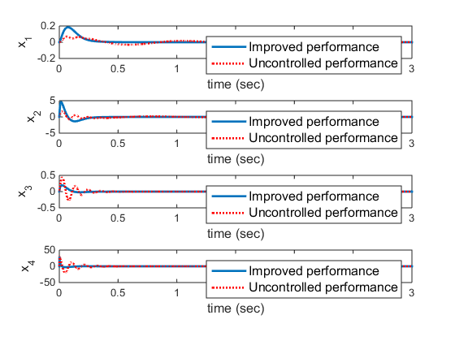
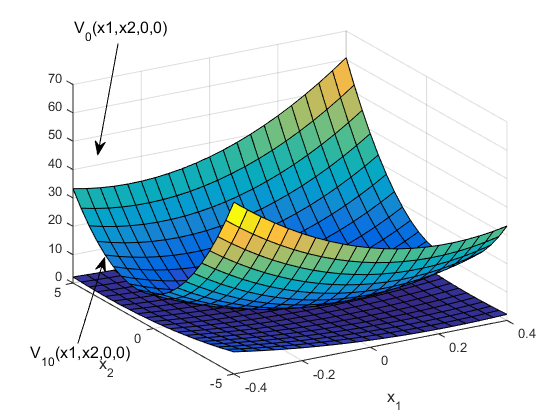

Contents
function Ch4Ex1_main()
SOS-based Policy Iteration for a car suspension systems
The function is tested in MATLAB R2014b Copyright 2015 Yu Jiang Contact Yu Jiang (yu.jiang@nyu.edu)
% System requirements: % - MATLAB (Manually Tested in MATLAB R2014b) % - MATLAB Symbolic Toolbox % - SDPT3-4.0 % - SISOTOOLS (free to download at http://www.cds.caltech.edu/sostools/) % You can download tools.zip and run setuptools.m in the folder. syms x1 x2 x3 x4 real mb = 300; % kg mw = 60; % kg bs = 1000; % N/m/s ks = 16000 ; % N/m kt = 190000; % N/m kn = 0.1*ks; % State matrices A = [ 0 1 0 0; [-ks -bs ks bs]/mb ; ... 0 0 0 1; [ks bs -ks-kt -bs]/mw]; B = [ 0 0; 0 10000/mb ; 0 0 ; [kt -10000]/mw]; B = B(:,2); % LQR feedback gains for the linearized system % Klqr = lqr(A,B,eye(4),1); % f(x) f = A*[x1;x2;x3;x4] + [0;-kn*(x1-x3)^3/mb;0;kn*(x1-x3)^3/mw]; % Polynomial Weighting functions q0 = 100*x1^2+x2^2+x3^2+x4^2; rx = 1;%+(x1^2+x2^2+x3^2+x4^2); vars = [x1;x2;x3;x4]; % Initialize the SOSp prog = sosprogram(vars); % The Lyapunov function V(x) [prog,V] = sospolyvar(prog,monomials([x1;x2;x3;x4],2:4),'wscoeff'); % Objective of the SOSp myObj = int(int(int(int(V,-.5,.5),-10,10),-.5,.5),-10,10); % Add Inequality constraint to assure V is positive definite prog = sosineq(prog,V-0.0001*(x1^2+x2^2+x3^2+x4^2)); % Add Inequality constraint to assure stability and performance expr = -[diff(V,x1) diff(V,x2) diff(V,x3) diff(V,x4)]*rx*f-rx*q0; prog = sosineq(prog,expr); % Solve the SOSp prog = sossolve(prog); % Obtain the Initial Lyapunov function V0 = sosgetsol(prog,V); V_old = V0; % Initializing the old contol policy u_prev = zeros(size(x1)); % Iteration for i=1:10 clear prog V %------------------------------ SOSp Start ---------------------------- prog = sosprogram(vars); [prog,V] = sospolyvar(prog,monomials([x1;x2;x3;x4],2:4),'wscoeff'); prog = sosineq(prog,V_old - V); prog = sosineq(prog, V); u = -1/2*B'*[diff(V_old,x1) diff(V_old,x2) diff(V_old,x3) diff(V_old,x4)].'; qfcn =rx*q0 + u'*u; expr = -[diff(V,x1) diff(V,x2) diff(V,x3) diff(V,x4)]*(rx*f+B*u)-qfcn; prog = sosineq(prog,expr); prog = sossetobj(prog, myObj); prog = sossolve(prog); %------------------------------ SOSp End ------------------------------ V_ = sosgetsol(prog,V); V_old = V_; end % Save the improved value function Vnew = V_;
num. of constraints = 260
dim. of sdp var = 46, num. of sdp blk = 2
dim. of free var = 65 *** convert ublk to lblk
*******************************************************************
SDPT3: Infeasible path-following algorithms
*******************************************************************
version predcorr gam expon scale_data
HKM 1 0.000 1 0
it pstep dstep pinfeas dinfeas gap prim-obj dual-obj cputime
-------------------------------------------------------------------
0|0.000|0.000|1.0e+02|2.5e+06|3.7e+09| 0.000000e+00 0.000000e+00| 0:0:00| chol 1 1
1|0.034|0.730|1.0e+02|6.8e+05|2.1e+08| 0.000000e+00 1.785069e+04| 0:0:01| chol 1 1
2|0.187|0.067|8.2e+01|6.4e+05|5.8e+07| 0.000000e+00 2.113388e+04| 0:0:01| chol 1 1
3|0.735|0.832|2.2e+01|1.1e+05|5.8e+06| 0.000000e+00 1.566444e+04| 0:0:01| chol 1 1
4|0.817|0.773|4.0e+00|2.4e+04|1.1e+06| 0.000000e+00 3.715371e+03| 0:0:01| chol 1 1
5|0.605|0.700|1.6e+00|7.3e+03|4.0e+05| 0.000000e+00 2.902565e+03| 0:0:01| chol 1 1
6|0.514|0.131|7.7e-01|6.3e+03|2.9e+05| 0.000000e+00 3.104988e+03| 0:0:01| chol 1 1
7|0.685|0.541|2.4e-01|2.9e+03|1.2e+05| 0.000000e+00 4.153724e+03| 0:0:01| chol 1 1
8|0.342|0.133|1.6e-01|2.5e+03|1.0e+05| 0.000000e+00 3.524534e+03| 0:0:02| chol 1 1
9|0.422|0.384|9.2e-02|1.5e+03|6.6e+04| 0.000000e+00 4.695314e+03| 0:0:02| chol 1 1
10|0.268|0.238|6.7e-02|1.2e+03|5.3e+04| 0.000000e+00 4.604568e+03| 0:0:02| chol 1 1
11|0.556|0.187|3.0e-02|9.6e+02|4.5e+04| 0.000000e+00 8.353038e+03| 0:0:02| chol 1 1
12|0.681|0.291|9.5e-03|6.8e+02|3.1e+04| 0.000000e+00 5.849727e+03| 0:0:02| chol 1 1
13|0.668|0.419|3.2e-03|4.0e+02|1.7e+04| 0.000000e+00 3.397860e+03| 0:0:02| chol 1 1
14|0.542|0.214|1.4e-03|3.1e+02|1.3e+04| 0.000000e+00 2.671017e+03| 0:0:02| chol 1 1
15|0.439|0.267|8.1e-04|2.3e+02|9.7e+03| 0.000000e+00 1.965536e+03| 0:0:02| chol 1 1
16|0.480|0.162|4.2e-04|1.9e+02|8.0e+03| 0.000000e+00 1.654287e+03| 0:0:02| chol 1 2
17|0.467|0.206|2.2e-04|1.5e+02|6.2e+03| 0.000000e+00 1.320029e+03| 0:0:02| chol 2 2
18|0.551|0.178|1.0e-04|1.3e+02|5.1e+03| 0.000000e+00 1.089286e+03| 0:0:02| chol 1 2
19|0.518|0.223|4.9e-05|1.0e+02|3.9e+03| 0.000000e+00 8.476608e+02| 0:0:02| chol 1 2
20|0.525|0.208|2.3e-05|8.0e+01|3.1e+03| 0.000000e+00 6.711819e+02| 0:0:02| chol 2 2
21|0.428|0.193|1.3e-05|6.8e+01|2.7e+03| 0.000000e+00 5.411461e+02| 0:0:02| chol 2 2
22|0.515|0.234|6.4e-06|5.2e+01|2.1e+03| 0.000000e+00 4.145629e+02| 0:0:02| chol 2 2
23|0.449|0.209|3.5e-06|4.1e+01|1.7e+03| 0.000000e+00 3.279809e+02| 0:0:02| chol 2 3
24|0.461|0.203|1.9e-06|3.3e+01|1.3e+03| 0.000000e+00 2.618715e+02| 0:0:02| chol 2 3
25|0.449|0.172|1.1e-06|3.1e+01|1.3e+03| 0.000000e+00 2.171902e+02| 0:0:02| chol 3 3
26|0.340|0.151|7.1e-07|3.0e+01|1.2e+03| 0.000000e+00 1.850505e+02| 0:0:03| chol 3 4
27|0.364|0.145|4.6e-07|2.9e+01|1.2e+03| 0.000000e+00 1.591086e+02| 0:0:03| chol 3 4
28|0.432|0.220|3.2e-07|2.2e+01|9.6e+02| 0.000000e+00 1.249711e+02| 0:0:03| chol 4 4
29|0.467|0.182|2.6e-07|2.2e+01|9.4e+02| 0.000000e+00 1.027573e+02| 0:0:03| chol 4 6
30|0.430|0.220|3.2e-07|1.7e+01|7.4e+02| 0.000000e+00 8.097139e+01| 0:0:03| chol 5 6
31|0.446|0.160|3.6e-07|1.8e+01|7.8e+02| 0.000000e+00 6.865455e+01| 0:0:03| chol 5 7
32|0.379|0.194|5.0e-07|1.8e+01|8.0e+02| 0.000000e+00 5.651843e+01| 0:0:03| chol 6 7
33|0.388|0.170|3.9e-07|1.8e+01|8.4e+02| 0.000000e+00 4.837066e+01| 0:0:03| chol 6 7
34|0.354|0.174|5.1e-07|1.8e+01|8.6e+02| 0.000000e+00 4.187260e+01| 0:0:03| chol 6 9
35|0.396|0.165|6.2e-07|1.9e+01|9.0e+02| 0.000000e+00 3.714956e+01| 0:0:03| chol 7 9
36|0.361|0.181|1.0e-06|1.9e+01|9.1e+02| 0.000000e+00 3.316140e+01| 0:0:03| chol 13 11
37|0.405|0.174|3.3e-07|1.9e+01|9.3e+02| 0.000000e+00 3.028534e+01| 0:0:03| chol 18 14
38|0.379|0.189|5.4e-07|1.9e+01|9.4e+02| 0.000000e+00 2.802813e+01| 0:0:03| chol 12 30
39|0.419|0.187|8.2e-07|1.9e+01|9.5e+02| 0.000000e+00 2.649854e+01| 0:0:03| chol 20 30
40|0.440|0.202|1.0e-06|1.5e+01|7.7e+02| 0.000000e+00 2.520000e+01| 0:0:03| chol 17 30
41|0.589|0.186|8.8e-07|1.6e+01|8.2e+02| 0.000000e+00 2.329005e+01| 0:0:03| chol
warning: symqmr failed: 0.3
switch to LU factor. lu 30 3
42|0.638|0.249|4.2e-07|1.2e+01|6.3e+02| 0.000000e+00 2.110562e+01| 0:0:04| lu 18 1
43|1.000|0.293|2.7e-07|8.3e+00|4.6e+02| 0.000000e+00 1.745905e+01| 0:0:04| lu 30 1
44|1.000|0.358|1.7e-07|5.3e+00|3.0e+02| 0.000000e+00 1.324660e+01| 0:0:04| lu 30 2
45|1.000|0.373|7.3e-07|3.3e+00|1.9e+02| 0.000000e+00 9.703829e+00| 0:0:04| lu 30 1
46|1.000|0.304|2.9e-07|2.3e+00|1.4e+02| 0.000000e+00 7.579997e+00| 0:0:04| lu 30 2
47|1.000|0.282|1.4e-07|1.7e+00|1.1e+02| 0.000000e+00 6.040279e+00| 0:0:04| lu 30 1
48|1.000|0.305|3.9e-07|1.2e+00|8.0e+01| 0.000000e+00 4.697944e+00| 0:0:04| lu 30 2
49|1.000|0.321|9.8e-07|7.8e-01|5.8e+01| 0.000000e+00 3.601412e+00| 0:0:04| lu 30 3
50|1.000|0.309|5.2e-07|5.4e-01|4.5e+01| 0.000000e+00 2.821355e+00| 0:0:04| lu 30 ^12
51|1.000|0.309|1.8e-06|3.7e-01|3.6e+01| 0.000000e+00 2.246565e+00| 0:0:04| lu 30 2
52|1.000|0.314|3.0e-06|2.6e-01|3.0e+01| 0.000000e+00 1.817399e+00| 0:0:04| lu 28 2
53|1.000|0.254|3.6e-06|1.9e-01|3.2e+01| 0.000000e+00 1.571966e+00| 0:0:04| lu 18 ^ 8
54|1.000|0.242|4.1e-06|1.5e-01|3.8e+01| 0.000000e+00 1.388513e+00| 0:0:04| lu 21 7
55|1.000|0.203|1.4e-05|1.2e-01|5.8e+01| 0.000000e+00 1.263651e+00| 0:0:05| lu 11 ^ 8
56|0.301|0.074|1.3e-04|1.4e-01|1.4e+02| 0.000000e+00 1.207914e+00| 0:0:05| lu 12 ^11
57|0.952|0.101|2.6e-05|1.7e-01|3.4e+02| 0.000000e+00 1.149227e+00| 0:0:05| lu 30 30
58|1.000|0.438|5.2e-04|9.7e-02|2.4e+02| 0.000000e+00 9.201095e-01| 0:0:05| lu 30 30
59|0.116|0.152|3.5e-03|1.1e-01|3.4e+02| 0.000000e+00 8.400368e-01| 0:0:05| lu 12 30
60|0.158|0.120|2.9e-03|1.3e-01|5.0e+02| 0.000000e+00 7.860335e-01| 0:0:05| lu 30 30
61|0.598|0.128|1.2e-03|1.5e-01|7.8e+02| 0.000000e+00 7.406276e-01| 0:0:05| lu 11 ^20
62|0.185|0.151|1.0e-03|1.8e-01|9.9e+02| 0.000000e+00 7.290667e-01| 0:0:05| lu 11 30
63|0.038|0.047|1.8e-03|2.2e-01|1.3e+03| 0.000000e+00 6.072064e-01| 0:0:05| lu 11 ^ 6
64|0.247|0.317|1.3e-03|1.5e-01|9.0e+02| 0.000000e+00 5.001565e-01| 0:0:05| lu 13 30
65|0.201|0.081|1.0e-03|1.9e-01|1.2e+03| 0.000000e+00 4.974466e-01| 0:0:05| lu 11 ^16
66|0.071|0.078|8.8e-04|2.4e-01|1.5e+03| 0.000000e+00 5.204170e-01| 0:0:06| lu 11 30
67|0.023|0.029|8.8e-04|3.0e-01|1.9e+03| 0.000000e+00 4.976069e-01| 0:0:06| lu 30 ^ 7
68|0.011|0.031|8.7e-04|3.9e-01|2.5e+03| 0.000000e+00 4.441292e-01| 0:0:06| lu 15 ^ 6
69|0.048|0.012|8.6e-04|5.4e-01|3.3e+03| 0.000000e+00 4.661575e-01| 0:0:06| lu 11 ^ 4
70|0.132|0.042|6.5e-04|7.3e-01|4.2e+03| 0.000000e+00 4.483940e-01| 0:0:06| lu 11 30
71|0.005|0.003|8.8e-04|1.0e+00|5.4e+03| 0.000000e+00 5.030774e-01| 0:0:06| lu 12 30
72|0.011|0.032|8.6e-04|1.4e+00|6.9e+03| 0.000000e+00 5.737057e-01| 0:0:06| lu 12 ^11
73|0.051|0.011|8.3e-04|2.0e+00|9.0e+03| 0.000000e+00 6.225471e-01| 0:0:06| lu 30 ^ 5
74|0.088|0.040|7.7e-04|2.9e+00|1.1e+04| 0.000000e+00 6.713509e-01| 0:0:06| lu 11 ^12
75|0.156|0.053|7.6e-04|4.1e+00|1.5e+04| 0.000000e+00 8.630834e-01| 0:0:06| lu 16 30
76|0.182|0.107|7.3e-04|5.0e+00|1.7e+04| 0.000000e+00 1.181000e+00| 0:0:06| lu 11 30
77|0.185|0.072|7.5e-04|6.2e+00|2.1e+04| 0.000000e+00 1.488407e+00| 0:0:06| lu 30 30
78|0.450|0.133|4.1e-04|7.0e+00|2.5e+04| 0.000000e+00 1.964894e+00| 0:0:07| lu 12 30
79|0.469|0.171|2.3e-04|7.5e+00|2.9e+04| 0.000000e+00 2.562799e+00| 0:0:07| lu 17 ^ 8
80|0.529|0.135|9.6e-05|8.3e+00|3.5e+04| 0.000000e+00 3.399049e+00| 0:0:07| lu 30 ^10
81|1.000|0.265|8.3e-05|6.1e+00|2.8e+04| 0.000000e+00 4.133782e+00| 0:0:07| lu 11 30
82|0.750|0.108|2.3e-04|7.1e+00|3.8e+04| 0.000000e+00 4.586630e+00| 0:0:07| lu 11 30
83|0.247|0.203|1.1e-03|5.6e+00|3.0e+04| 0.000000e+00 5.360350e+00| 0:0:07| lu 21 ^14
84|0.560|0.243|3.8e-04|4.3e+00|2.5e+04| 0.000000e+00 5.801665e+00| 0:0:07| lu 13 ^19
85|0.246|0.330|3.7e-04|2.8e+00|1.6e+04| 0.000000e+00 5.056686e+00| 0:0:07| lu 14 ^27
86|0.046|0.025|1.3e-03|3.8e+00|2.1e+04| 0.000000e+00 5.181142e+00| 0:0:07| lu 12 30
87|0.204|0.114|1.0e-03|4.6e+00|2.4e+04| 0.000000e+00 5.045318e+00| 0:0:07| lu 30 30
88|0.554|0.109|5.8e-04|5.5e+00|3.1e+04| 0.000000e+00 4.988878e+00| 0:0:07| lu 11 30
89|0.508|0.151|2.1e-04|6.2e+00|3.7e+04| 0.000000e+00 5.031072e+00| 0:0:08| lu 20 30
90|0.357|0.280|2.4e-04|4.4e+00|2.7e+04| 0.000000e+00 4.410455e+00| 0:0:08| lu 11 30
91|0.351|0.073|1.4e-03|5.5e+00|3.6e+04| 0.000000e+00 4.546533e+00| 0:0:08| lu 11 30
92|0.022|0.039|8.9e-04|6.8e+00|4.3e+04| 0.000000e+00 4.737093e+00| 0:0:08| lu 14 30
93|0.050|0.115|9.0e-04|7.6e+00|5.0e+04| 0.000000e+00 4.481599e+00| 0:0:08| lu 28 30
94|0.233|0.041|6.1e-04|9.1e+00|6.4e+04| 0.000000e+00 4.627908e+00| 0:0:08| lu 13 30
95|0.160|0.063|3.9e-04|1.0e+01|7.9e+04| 0.000000e+00 5.014189e+00| 0:0:08| lu 11 30
96|0.296|0.062|1.1e-03|1.2e+01|1.0e+05| 0.000000e+00 5.594839e+00| 0:0:08| lu 11 30
97|0.179|0.094|2.5e-03|1.3e+01|1.2e+05| 0.000000e+00 6.871813e+00| 0:0:08| lu 22 30
98|0.218|0.111|1.9e-03|1.4e+01|1.4e+05| 0.000000e+00 7.914369e+00| 0:0:08| lu 11 30
99|0.755|0.061|2.0e-03|1.6e+01|2.0e+05| 0.000000e+00 9.087382e+00| 0:0:08| lu 11 30
100|0.029|0.037|4.0e-04|1.8e+01|2.3e+05| 0.000000e+00 9.853444e+00| 0:0:09|
sqlp stop: maximum number of iterations reached
-------------------------------------------------------------------
number of iterations = 100
primal objective value = 0.00000000e+00
dual objective value = 3.60141245e+00
gap := trace(XZ) = 5.84e+01
relative gap = 1.27e+01
actual relative gap = -7.83e-01
rel. primal infeas = 9.82e-07
rel. dual infeas = 7.85e-01
norm(X), norm(y), norm(Z) = 5.2e+03, 1.4e+09, 1.5e+09
norm(A), norm(b), norm(C) = 5.1e+04, 1.0e+02, 1.0e+00
Total CPU time (secs) = 8.57
CPU time per iteration = 0.09
termination code = -6
DIMACS: 9.8e-07 0.0e+00 7.8e-01 0.0e+00 -7.8e-01 1.3e+01
-------------------------------------------------------------------
Residual norm: 9.9226e-05
cpusec: 8.5730
iter: 100
pinf: 0
dinf: 1
numerr: -6
num. of constraints = 335
dim. of sdp var = 62, num. of sdp blk = 3
dim. of free var = 65 *** convert ublk to lblk
*******************************************************************
SDPT3: Infeasible path-following algorithms
*******************************************************************
version predcorr gam expon scale_data
HKM 1 0.000 1 0
it pstep dstep pinfeas dinfeas gap prim-obj dual-obj cputime
-------------------------------------------------------------------
0|0.000|0.000|9.2e+01|1.3e+02|9.1e+13| 1.084671e-01 0.000000e+00| 0:0:00| chol 1 2
1|0.000|0.035|9.2e+01|1.3e+02|1.8e+13| 2.706930e+06 1.871730e+06| 0:0:00| chol 1 2
2|0.002|0.003|9.2e+01|1.3e+02|3.8e+12| 3.794622e+07 2.019188e+06| 0:0:00| chol 1 1
3|0.348|0.513|6.0e+01|6.1e+01|7.0e+11| 1.409482e+08 1.141217e+07| 0:0:00| chol 1 1
4|0.898|0.851|6.1e+00|9.1e+00|5.3e+10| 1.619112e+08 -2.044595e+06| 0:0:00| chol 2 2
5|0.714|0.745|1.7e+00|2.3e+00|1.4e+10| 1.238237e+08 -4.789580e+06| 0:0:00| chol 2 2
6|0.612|0.552|6.8e-01|1.0e+00|6.4e+09| 3.518436e+07 -5.477665e+06| 0:0:00| chol 2 1
7|0.631|0.270|2.5e-01|7.6e-01|3.4e+09| 8.330595e+07 -5.786478e+06| 0:0:00| chol 2 2
8|0.552|0.401|1.1e-01|4.5e-01|1.8e+09| 2.391003e+07 -6.154429e+06| 0:0:00| chol 2 2
9|0.449|0.371|6.2e-02|2.9e-01|1.1e+09|-2.238624e+07 -6.278005e+06| 0:0:00| chol 2 2
10|0.468|0.275|3.3e-02|2.1e-01|6.5e+08|-1.561704e+07 -5.963904e+06| 0:0:01| chol 2 2
11|0.669|0.461|1.1e-02|1.1e-01|2.5e+08| 2.447253e+06 -5.747775e+06| 0:0:01| chol 2 2
12|0.569|0.439|4.7e-03|6.2e-02|1.1e+08| 2.606072e+06 -4.988965e+06| 0:0:01| chol 2 2
13|0.618|0.339|1.8e-03|4.1e-02|5.4e+07| 1.229487e+06 -4.311188e+06| 0:0:01| chol 2 2
14|0.835|0.412|3.0e-04|2.4e-02|1.7e+07| 3.687012e+05 -3.353157e+06| 0:0:01| chol 2 2
15|0.668|0.385|9.8e-05|1.5e-02|8.8e+06| 1.576302e+05 -2.413969e+06| 0:0:01| chol 2 2
16|0.713|0.317|2.8e-05|1.0e-02|4.9e+06| 6.619281e+04 -1.808975e+06| 0:0:01| chol 2 2
17|0.660|0.424|9.6e-06|5.9e-03|2.8e+06| 3.671198e+04 -1.117483e+06| 0:0:01| chol 2 2
18|0.668|0.339|3.2e-06|3.9e-03|1.7e+06| 2.796073e+04 -7.751393e+05| 0:0:01| chol 2 2
19|0.646|0.270|1.1e-06|2.8e-03|1.2e+06| 2.626130e+04 -5.844153e+05| 0:0:01| chol 2 2
20|0.608|0.314|4.4e-07|1.9e-03|7.8e+05| 2.489132e+04 -4.081739e+05| 0:0:01| chol 2 3
21|0.465|0.220|2.4e-07|1.5e-03|6.0e+05| 2.428948e+04 -3.203909e+05| 0:0:01| chol 2 3
22|0.609|0.239|9.2e-08|1.2e-03|4.4e+05| 2.279438e+04 -2.445755e+05| 0:0:01| chol 3 3
23|0.494|0.233|4.7e-08|8.9e-04|3.3e+05| 2.162591e+04 -1.873289e+05| 0:0:01| chol 3 3
24|0.547|0.203|2.1e-08|7.1e-04|2.6e+05| 2.019734e+04 -1.486449e+05| 0:0:01| chol 3 3
25|0.431|0.223|1.2e-08|5.5e-04|2.0e+05| 1.919370e+04 -1.141701e+05| 0:0:01| chol 3 4
26|0.525|0.184|6.7e-09|4.5e-04|1.6e+05| 1.800383e+04 -9.174372e+04| 0:0:01| chol 4 4
27|0.382|0.206|6.7e-09|3.6e-04|1.3e+05| 1.732235e+04 -7.107718e+04| 0:0:01| chol 4 5
28|0.501|0.163|4.7e-09|3.0e-04|1.1e+05| 1.654253e+04 -5.800014e+04| 0:0:01| chol 5 7
29|0.404|0.192|8.5e-09|2.5e-04|8.5e+04| 1.604165e+04 -4.499431e+04| 0:0:01| chol 6 12
30|0.453|0.174|1.2e-08|2.0e-04|7.0e+04| 1.551462e+04 -3.542089e+04| 0:0:01| chol 6 8
31|0.445|0.188|1.3e-08|1.7e-04|5.7e+04| 1.500644e+04 -2.681088e+04| 0:0:01| chol 13 20
32|0.296|0.189|3.7e-08|1.4e-04|4.6e+04| 1.470590e+04 -1.970732e+04| 0:0:02| chol
linsysolve: Schur complement matrix not positive definite
switch to LU factor. lu 19 ^28
33|0.410|0.157|1.1e-07|1.2e-04|3.8e+04| 1.407096e+04 -1.491236e+04| 0:0:02| lu 30 ^12
34|0.051|0.022|8.1e-08|1.2e-04|3.7e+04| 1.399969e+04 -1.435622e+04| 0:0:02| lu 14 2
35|0.528|0.063|3.5e-08|1.1e-04|3.4e+04| 1.345450e+04 -1.275835e+04| 0:0:02| lu 30 4
36|0.333|0.210|2.2e-08|8.9e-05|2.7e+04| 1.316899e+04 -7.800345e+03| 0:0:02| lu 26 9
37|0.580|0.150|3.9e-08|7.6e-05|2.2e+04| 1.269950e+04 -4.986489e+03| 0:0:02| lu 30 ^ 3
38|0.098|0.227|2.7e-08|5.8e-05|1.7e+04| 1.264452e+04 -1.331914e+03| 0:0:02| lu 24 ^19
39|0.701|0.083|3.0e-08|5.4e-05|1.5e+04| 1.221620e+04 -2.977836e+02| 0:0:02| lu 18 ^25
40|0.282|0.129|5.0e-08|4.7e-05|1.4e+04| 1.216586e+04 1.223948e+03| 0:0:02| lu 30 ^ 8
41|0.164|0.061|2.9e-07|4.4e-05|1.3e+04| 1.213603e+04 1.887098e+03| 0:0:02| lu 30 ^ 3
42|0.380|0.221|2.0e-07|3.4e-05|1.0e+04| 1.207591e+04 3.776597e+03| 0:0:02| lu 30 ^22
43|0.580|0.381|8.4e-08|2.1e-05|6.5e+03| 1.194938e+04 6.707449e+03| 0:0:02| lu 18 ^ 4
44|0.505|0.087|9.1e-08|1.9e-05|6.0e+03| 1.191161e+04 7.172693e+03| 0:0:03| lu 30 30
45|0.077|0.039|9.6e-08|1.9e-05|5.6e+03| 1.190880e+04 7.336186e+03| 0:0:03| lu 11 ^20
46|0.381|0.256|4.4e-08|1.4e-05|4.2e+03| 1.187641e+04 8.463749e+03| 0:0:03| lu 24 ^26
47|0.366|0.078|1.6e-07|1.3e-05|3.9e+03| 1.185931e+04 8.700601e+03| 0:0:03| lu 12 ^ 8
48|0.435|0.106|7.9e-08|1.1e-05|3.6e+03| 1.185038e+04 9.039396e+03| 0:0:03| lu 30 ^10
49|0.154|0.153|7.0e-08|9.7e-06|3.0e+03| 1.184867e+04 9.478592e+03| 0:0:03|# lu 30 30
50|0.832|0.107|5.5e-08|8.7e-06|2.8e+03| 1.182552e+04 9.726227e+03| 0:0:03| lu 11 ^13
51|0.362|0.148|2.4e-07|7.4e-06|2.3e+03| 1.181629e+04 1.000141e+04| 0:0:03| lu 30 ^30
52|1.000|0.319|4.4e-08|5.1e-06|1.6e+03| 1.179408e+04 1.053798e+04| 0:0:03| lu 30 30
53|0.598|0.176|1.8e-06|4.2e-06|1.3e+03| 1.179653e+04 1.076413e+04| 0:0:03| lu 30 ^ 9
54|0.864|0.208|8.6e-07|3.3e-06|1.1e+03| 1.179283e+04 1.097894e+04| 0:0:03| lu 11 30
55|0.605|0.198|1.1e-06|2.7e-06|8.2e+02| 1.178410e+04 1.111964e+04| 0:0:04| lu 30 30
56|0.230|0.213|1.1e-06|2.1e-06|6.2e+02| 1.178306e+04 1.125263e+04| 0:0:04| lu 30 30
57|0.118|0.111|8.9e-07|1.9e-06|5.6e+02| 1.178225e+04 1.130184e+04| 0:0:04| lu 30 ^27
58|0.157|0.071|6.5e-07|1.9e-06|5.3e+02| 1.178102e+04 1.133853e+04| 0:0:04| lu 30 ^ 3
59|0.400|0.089|3.3e-07|1.8e-06|5.1e+02| 1.177830e+04 1.137480e+04| 0:0:04| lu 30 30
60|0.628|0.132|4.5e-07|1.6e-06|4.6e+02| 1.177457e+04 1.142649e+04| 0:0:04| lu 11 ^ 4
61|0.096|0.095|1.2e-06|1.5e-06|4.1e+02| 1.177422e+04 1.144936e+04| 0:0:04| lu 30 ^17
62|0.088|0.104|1.1e-06|1.5e-06|3.9e+02| 1.177535e+04 1.147693e+04| 0:0:04| lu 11 30
63|0.053|0.117|1.1e-06|1.5e-06|3.7e+02| 1.177573e+04 1.150432e+04| 0:0:04| lu 11 ^20
64|0.002|0.006|1.1e-06|1.7e-06|4.0e+02| 1.177643e+04 1.150364e+04| 0:0:04| lu 30 30
65|0.025|0.046|1.1e-06|1.8e-06|4.2e+02| 1.177628e+04 1.152461e+04| 0:0:05| lu 11 ^28
66|0.232|0.009|1.1e-06|2.0e-06|4.6e+02| 1.177635e+04 1.152697e+04| 0:0:05| lu 30 30
67|0.185|0.105|6.1e-07|2.0e-06|4.6e+02| 1.177596e+04 1.154789e+04| 0:0:05| lu 11 30
68|0.079|0.081|5.8e-07|2.0e-06|4.4e+02| 1.177739e+04 1.155555e+04| 0:0:05| lu 19 30
69|0.157|0.040|7.5e-07|2.0e-06|4.6e+02| 1.177789e+04 1.155907e+04| 0:0:05| lu 29 30
70|0.151|0.072|7.0e-07|2.0e-06|4.5e+02| 1.177706e+04 1.157295e+04| 0:0:05| lu 11 30
71|0.002|0.003|6.5e-07|2.1e-06|4.6e+02| 1.177664e+04 1.159128e+04| 0:0:05| lu 30 30
72|0.133|0.019|5.8e-07|2.2e-06|4.8e+02| 1.177507e+04 1.159267e+04| 0:0:05| lu 30 30
73|0.386|0.049|4.3e-07|2.2e-06|4.9e+02| 1.177605e+04 1.159991e+04| 0:0:05| lu 24 ^14
74|0.081|0.123|4.0e-07|2.0e-06|4.5e+02| 1.177562e+04 1.161477e+04| 0:0:05| lu 30 ^20
75|0.883|0.115|2.9e-08|1.9e-06|4.1e+02| 1.177317e+04 1.162586e+04| 0:0:06| lu 22 30
76|0.115|0.072|9.1e-08|1.8e-06|3.7e+02| 1.177288e+04 1.163206e+04| 0:0:06| lu 11 ^ 6
77|0.000|0.001|9.8e-08|1.8e-06|3.7e+02| 1.177325e+04 1.162500e+04| 0:0:06| lu 30 ^ 8
78|0.062|0.082|9.3e-08|1.6e-06|3.4e+02| 1.177270e+04 1.163702e+04| 0:0:06| lu 30 ^28
79|0.277|0.019|7.1e-08|1.6e-06|3.6e+02| 1.177387e+04 1.163885e+04| 0:0:06| lu 11 30
80|0.046|0.067|1.5e-07|1.5e-06|3.3e+02| 1.177365e+04 1.164756e+04| 0:0:06| lu 11 30
81|0.004|0.006|1.6e-07|1.5e-06|3.2e+02| 1.177354e+04 1.165081e+04| 0:0:06| lu 11 30
82|0.021|0.030|1.6e-07|1.5e-06|3.2e+02| 1.177324e+04 1.165802e+04| 0:0:06| lu 30 30
83|0.110|0.007|9.8e-08|1.5e-06|3.3e+02| 1.177332e+04 1.165842e+04| 0:0:06| lu 30 30
84|0.322|0.047|4.8e-08|1.5e-06|3.3e+02| 1.177192e+04 1.166295e+04| 0:0:06| lu 30 30
85|0.220|0.094|8.0e-07|1.4e-06|3.0e+02| 1.177365e+04 1.166943e+04| 0:0:07| lu 30 ^ 8
86|0.379|0.117|4.4e-07|1.2e-06|2.8e+02| 1.177334e+04 1.167611e+04| 0:0:07| lu 11 30
87|0.338|0.103|3.7e-07|1.1e-06|2.5e+02| 1.177233e+04 1.168099e+04| 0:0:07| lu 11 ^26
88|0.592|0.136|1.9e-07|1.0e-06|2.2e+02| 1.176948e+04 1.168797e+04| 0:0:07| lu 11 ^16
89|0.350|0.157|1.1e-06|8.8e-07|1.9e+02| 1.177008e+04 1.169489e+04| 0:0:07| lu 11 30
90|0.471|0.146|1.2e-06|8.1e-07|1.8e+02| 1.176842e+04 1.169998e+04| 0:0:07| lu 22 ^14
91|0.543|0.168|6.8e-07|7.6e-07|1.7e+02| 1.176883e+04 1.170591e+04| 0:0:07| lu 30 30
92|1.000|0.196|2.5e-07|6.9e-07|1.5e+02| 1.176814e+04 1.171208e+04| 0:0:07| lu 11 ^27
93|0.046|0.044|2.3e-07|7.1e-07|1.4e+02| 1.176918e+04 1.171269e+04| 0:0:07| lu 17 ^ 7
94|0.182|0.188|2.9e-07|6.2e-07|1.2e+02| 1.176804e+04 1.171764e+04| 0:0:07| lu 11 30
95|0.066|0.068|2.9e-07|6.4e-07|1.2e+02| 1.176712e+04 1.172163e+04| 0:0:08| lu 30 ^16
96|0.168|0.043|2.6e-07|6.7e-07|1.3e+02| 1.176517e+04 1.172342e+04| 0:0:08| lu 30 ^15
97|0.014|0.011|2.6e-07|7.1e-07|1.3e+02| 1.176494e+04 1.172802e+04| 0:0:08| lu 30 30
98|0.094|0.039|2.3e-07|7.4e-07|1.4e+02| 1.176461e+04 1.172956e+04| 0:0:08| lu 30 30
99|0.053|0.032|2.4e-07|7.6e-07|1.4e+02| 1.176473e+04 1.173055e+04| 0:0:08| lu 13 30
100|0.049|0.025|2.1e-07|7.9e-07|1.4e+02| 1.176646e+04 1.173267e+04| 0:0:08|
sqlp stop: maximum number of iterations reached
-------------------------------------------------------------------
number of iterations = 100
primal objective value = 1.17681383e+04
dual objective value = 1.17120827e+04
gap := trace(XZ) = 1.53e+02
relative gap = 6.50e-03
actual relative gap = 2.39e-03
rel. primal infeas = 2.55e-07
rel. dual infeas = 6.89e-07
norm(X), norm(y), norm(Z) = 6.0e+02, 2.0e+10, 2.1e+10
norm(A), norm(b), norm(C) = 9.3e+05, 1.4e+05, 1.7e+06
Total CPU time (secs) = 8.02
CPU time per iteration = 0.08
termination code = -6
DIMACS: 3.4e-07 0.0e+00 1.5e-06 0.0e+00 2.4e-03 6.5e-03
-------------------------------------------------------------------
Residual norm: 0.035142
cpusec: 8.0160
iter: 100
pinf: 0
dinf: 0
numerr: -6
num. of constraints = 335
dim. of sdp var = 62, num. of sdp blk = 3
dim. of free var = 65 *** convert ublk to lblk
*******************************************************************
SDPT3: Infeasible path-following algorithms
*******************************************************************
version predcorr gam expon scale_data
HKM 1 0.000 1 0
it pstep dstep pinfeas dinfeas gap prim-obj dual-obj cputime
-------------------------------------------------------------------
0|0.000|0.000|9.1e+01|1.3e+02|2.0e+13| 2.394199e-02 0.000000e+00| 0:0:00| chol 1 1
1|0.000|0.096|9.1e+01|1.2e+02|3.8e+12| 9.975008e+05 1.485376e+07| 0:0:00| chol 1 1
2|0.185|0.129|7.4e+01|1.0e+02|1.0e+12| 2.618769e+08 1.136248e+07| 0:0:00| chol 1 1
3|0.759|0.693|1.8e+01|3.1e+01|1.6e+11| 3.069180e+08 1.363838e+04| 0:0:00| chol 1 1
4|0.778|0.842|4.0e+00|5.0e+00|2.4e+10| 2.773711e+08 -3.325262e+06| 0:0:00| chol 1 1
5|0.602|0.442|1.6e+00|2.8e+00|1.2e+10| 1.857973e+08 -3.847142e+06| 0:0:00| chol 2 2
6|0.595|0.317|6.4e-01|1.9e+00|6.4e+09| 1.378292e+08 -4.203110e+06| 0:0:00| chol 1 2
7|0.591|0.514|2.6e-01|9.2e-01|3.0e+09| 7.779758e+07 -4.673424e+06| 0:0:00| chol 2 2
8|0.570|0.254|1.1e-01|6.9e-01|1.6e+09| 1.513173e+07 -5.091344e+06| 0:0:00| chol 2 2
9|0.591|0.343|4.6e-02|4.5e-01|7.1e+08| 1.166688e+07 -5.169352e+06| 0:0:00| chol 2 2
10|0.657|0.528|1.6e-02|2.1e-01|2.6e+08| 4.046549e+06 -4.821843e+06| 0:0:00| chol 1 2
11|0.611|0.325|6.1e-03|1.4e-01|1.1e+08| 1.638855e+06 -4.320730e+06| 0:0:00| chol 2 2
12|0.756|0.411|1.5e-03|8.5e-02|3.2e+07| 4.880513e+05 -3.339890e+06| 0:0:01| chol 2 2
13|0.775|0.470|3.4e-04|4.5e-02|1.0e+07| 1.234982e+05 -1.993233e+06| 0:0:01| chol 2 2
14|0.579|0.485|1.4e-04|2.3e-02|4.6e+06| 6.085790e+04 -9.644155e+05| 0:0:01| chol 2 2
15|0.797|0.361|2.9e-05|1.5e-02|2.0e+06| 2.311326e+04 -6.628131e+05| 0:0:01| chol 2 2
16|0.767|0.444|6.7e-06|8.2e-03|9.3e+05| 1.385242e+04 -3.895117e+05| 0:0:01| chol 2 2
17|0.738|0.407|1.7e-06|4.9e-03|5.1e+05| 1.187284e+04 -2.367055e+05| 0:0:01| chol 2 2
18|0.712|0.339|5.0e-07|3.2e-03|3.2e+05| 1.140099e+04 -1.569190e+05| 0:0:01| chol 2 2
19|0.680|0.306|1.6e-07|2.2e-03|2.2e+05| 1.121798e+04 -1.078696e+05| 0:0:01| chol 2 3
20|0.487|0.274|8.3e-08|1.6e-03|1.6e+05| 1.111848e+04 -7.687620e+04| 0:0:01| chol 3 3
21|0.530|0.237|3.9e-08|1.2e-03|1.2e+05| 1.102473e+04 -5.708229e+04| 0:0:01| chol 3 3
22|0.547|0.221|1.8e-08|9.7e-04|9.4e+04| 1.093315e+04 -4.281980e+04| 0:0:01| chol 3 3
23|0.456|0.224|9.7e-09|7.5e-04|7.3e+04| 1.085674e+04 -3.142353e+04| 0:0:01| chol 3 3
24|0.516|0.186|4.9e-09|6.1e-04|5.9e+04| 1.076173e+04 -2.402729e+04| 0:0:01| chol 4 4
25|0.417|0.199|3.3e-09|4.9e-04|4.7e+04| 1.068084e+04 -1.752131e+04| 0:0:01| chol 4 4
26|0.501|0.176|3.1e-09|4.1e-04|3.9e+04| 1.057559e+04 -1.289929e+04| 0:0:01| chol 5 5
27|0.404|0.200|3.6e-09|3.3e-04|3.1e+04| 1.049075e+04 -8.522146e+03| 0:0:01| chol 4 6
28|0.504|0.167|6.4e-09|2.8e-04|2.6e+04| 1.038355e+04 -5.572514e+03| 0:0:01| chol 9 10
29|0.375|0.198|3.9e-09|2.2e-04|2.1e+04| 1.031184e+04 -2.636158e+03| 0:0:01| chol 7 8
30|0.510|0.162|4.8e-09|1.9e-04|1.8e+04| 1.021986e+04 -7.000256e+02| 0:0:01| chol 7 10
31|0.358|0.203|5.7e-09|1.5e-04|1.4e+04| 1.016789e+04 1.355460e+03| 0:0:01| chol 8 15
32|0.502|0.157|6.0e-09|1.3e-04|1.2e+04| 1.010290e+04 2.638310e+03| 0:0:01| chol 10 16
33|0.349|0.191|5.1e-09|1.1e-04|9.8e+03| 1.006951e+04 3.967116e+03| 0:0:02| chol 10 11
34|0.398|0.156|6.7e-09|9.2e-05|8.4e+03| 1.003702e+04 4.873570e+03| 0:0:02| chol 14 16
35|0.239|0.164|1.3e-08|7.7e-05|7.1e+03| 1.002213e+04 5.821053e+03| 0:0:02| chol 16 23
36|0.616|0.120|5.9e-08|6.8e-05|6.3e+03| 9.987062e+03 6.428478e+03| 0:0:02| chol
warning: symqmr failed: 0.3
switch to LU factor. lu 30 8
37|0.577|0.235|3.5e-08|5.2e-05|4.9e+03| 9.966828e+03 7.357436e+03| 0:0:02| lu 30 ^14
38|0.297|0.228|4.5e-08|4.0e-05|3.8e+03| 9.959890e+03 8.059208e+03| 0:0:02| lu 30 6
39|0.536|0.111|1.5e-08|3.6e-05|3.4e+03| 9.950406e+03 8.335723e+03| 0:0:02| lu 30 10
40|0.310|0.163|2.3e-08|3.0e-05|2.9e+03| 9.947859e+03 8.670683e+03| 0:0:02| lu 23 8
41|0.456|0.166|5.6e-08|2.5e-05|2.4e+03| 9.942278e+03 8.973083e+03| 0:0:02| lu 20 ^13
42|0.535|0.199|3.2e-08|2.0e-05|2.0e+03| 9.937059e+03 9.276327e+03| 0:0:02| lu 30 30
43|1.000|0.106|1.1e-07|1.8e-05|1.9e+03| 9.937386e+03 9.410385e+03| 0:0:02| lu 11 ^23
44|0.516|0.131|5.4e-07|1.5e-05|1.6e+03| 9.937151e+03 9.512700e+03| 0:0:02| lu 30 ^ 8
45|1.000|0.198|1.1e-07|1.2e-05|1.4e+03| 9.939506e+03 9.715481e+03| 0:0:02| lu 30 ^24
46|0.567|0.593|1.9e-07|5.1e-06|5.7e+02| 9.932989e+03 1.018923e+04| 0:0:03| lu 11 ^ 5
47|0.355|0.170|1.6e-07|4.2e-06|4.7e+02| 9.931002e+03 1.024046e+04| 0:0:03| lu 30 ^28
48|0.564|0.108|1.7e-07|3.8e-06|4.4e+02| 9.929640e+03 1.027361e+04| 0:0:03| lu 30 ^ 3
49|0.327|0.145|1.6e-07|3.3e-06|3.7e+02| 9.928884e+03 1.030863e+04| 0:0:03| lu 12 ^ 9
50|0.543|0.157|1.2e-07|2.8e-06|3.1e+02| 9.927014e+03 1.034202e+04| 0:0:03| lu 30 ^ 8
51|0.590|0.174|1.6e-07|2.3e-06|2.7e+02| 9.926181e+03 1.037348e+04| 0:0:03| lu 11 ^ 6
52|0.621|0.155|3.0e-07|2.0e-06|2.2e+02| 9.924704e+03 1.039528e+04| 0:0:03| lu 11 ^ 8
53|0.340|0.192|1.8e-07|1.6e-06|1.8e+02| 9.924213e+03 1.041842e+04| 0:0:03| lu 11 ^13
54|0.153|0.148|9.9e-08|1.4e-06|1.6e+02| 9.923890e+03 1.043493e+04| 0:0:03| lu 11 ^ 5
55|0.696|0.099|6.8e-08|1.3e-06|1.4e+02| 9.922764e+03 1.044519e+04| 0:0:03| lu 11 ^22
56|0.424|0.149|7.5e-08|1.1e-06|1.2e+02| 9.922273e+03 1.045652e+04| 0:0:03| lu 30 ^12
57|1.000|0.143|1.1e-07|9.8e-07|1.1e+02| 9.921951e+03 1.046796e+04| 0:0:03| lu 11 ^ 3
58|0.104|0.068|2.3e-07|9.3e-07|1.0e+02| 9.922206e+03 1.047197e+04| 0:0:04| lu 14 ^ 4
59|0.234|0.232|1.3e-07|7.4e-07|7.8e+01| 9.922313e+03 1.048683e+04| 0:0:04| lu 30 ^25
60|0.014|0.034|9.5e-08|7.4e-07|7.5e+01| 9.922379e+03 1.048709e+04| 0:0:04| lu 30 ^27
61|0.182|0.060|7.3e-08|7.1e-07|7.4e+01| 9.922286e+03 1.049037e+04| 0:0:04| lu 11 ^24
62|0.102|0.064|1.0e-07|6.8e-07|7.0e+01| 9.921994e+03 1.049259e+04| 0:0:04| lu 30 ^ 5
63|0.091|0.053|8.8e-08|6.6e-07|6.8e+01| 9.922205e+03 1.049531e+04| 0:0:04| lu 14 ^ 5
64|0.441|0.069|8.2e-08|6.3e-07|6.5e+01| 9.921051e+03 1.049764e+04| 0:0:04|
stop: progress is bad
-------------------------------------------------------------------
number of iterations = 64
primal objective value = 9.92231257e+03
dual objective value = 1.04868321e+04
gap := trace(XZ) = 7.78e+01
relative gap = 3.81e-03
actual relative gap = -2.77e-02
rel. primal infeas = 1.26e-07
rel. dual infeas = 7.43e-07
norm(X), norm(y), norm(Z) = 2.2e+02, 1.4e+10, 1.4e+10
norm(A), norm(b), norm(C) = 4.8e+05, 3.3e+04, 1.7e+06
Total CPU time (secs) = 4.03
CPU time per iteration = 0.06
termination code = -5
DIMACS: 1.7e-07 0.0e+00 1.6e-06 0.0e+00 -2.8e-02 3.8e-03
-------------------------------------------------------------------
Residual norm: 0.0041262
cpusec: 4.0270
iter: 64
pinf: 0
dinf: 0
numerr: -5
num. of constraints = 335
dim. of sdp var = 62, num. of sdp blk = 3
dim. of free var = 65 *** convert ublk to lblk
*******************************************************************
SDPT3: Infeasible path-following algorithms
*******************************************************************
version predcorr gam expon scale_data
HKM 1 0.000 1 0
it pstep dstep pinfeas dinfeas gap prim-obj dual-obj cputime
-------------------------------------------------------------------
0|0.000|0.000|8.9e+01|1.3e+02|1.9e+13| 2.291298e-02 0.000000e+00| 0:0:00| chol 1 1
1|0.000|0.038|8.9e+01|1.3e+02|3.8e+12| 5.737524e+05 5.160383e+06| 0:0:00| chol 1 1
2|0.001|0.002|8.9e+01|1.2e+02|8.3e+11| 1.209931e+07 5.081519e+06| 0:0:00| chol 1 1
3|0.468|0.452|4.7e+01|6.8e+01|1.8e+11| 6.559116e+07 -7.780903e+05| 0:0:00| chol 1 1
4|0.809|0.732|9.0e+00|1.8e+01|2.9e+10| 7.940404e+07 -5.730785e+06| 0:0:00| chol 1 1
5|0.721|0.742|2.5e+00|4.7e+00|7.5e+09| 7.731457e+07 -7.303998e+06| 0:0:00| chol 1 1
6|0.640|0.513|9.1e-01|2.3e+00|3.3e+09| 6.371543e+07 -7.635889e+06| 0:0:00| chol 1 1
7|0.642|0.414|3.3e-01|1.3e+00|1.5e+09| 3.240866e+07 -7.502495e+06| 0:0:00| chol 1 1
8|0.620|0.517|1.2e-01|6.5e-01|6.5e+08| 1.139146e+07 -6.590257e+06| 0:0:00| chol 1 2
9|0.593|0.371|5.0e-02|4.1e-01|2.9e+08| 3.002322e+06 -5.741330e+06| 0:0:00| chol 1 1
10|0.751|0.350|1.3e-02|2.7e-01|9.0e+07| 8.364785e+05 -4.712533e+06| 0:0:00| chol 2 2
11|0.756|0.512|3.1e-03|1.3e-01|2.6e+07| 2.887638e+05 -3.024147e+06| 0:0:01| chol 2 2
12|0.719|0.452|8.6e-04|7.1e-02|9.3e+06| 9.733615e+04 -1.722545e+06| 0:0:01| chol 2 2
13|0.740|0.418|2.2e-04|4.2e-02|3.7e+06| 3.538573e+04 -5.844014e+05| 0:0:01| chol 2 2
14|0.811|0.692|4.2e-05|1.3e-02|9.8e+05| 1.484820e+04 -2.707722e+05| 0:0:01| chol 2 2
15|0.755|0.336|1.0e-05|8.5e-03|5.6e+05| 1.047978e+04 -1.891589e+05| 0:0:01| chol 2 2
16|0.783|0.357|2.2e-06|5.5e-03|3.3e+05| 9.530001e+03 -1.235097e+05| 0:0:01| chol 2 2
17|0.687|0.429|7.0e-07|3.1e-03|1.9e+05| 9.316049e+03 -6.951501e+04| 0:0:01| chol 2 2
18|0.664|0.307|2.4e-07|2.2e-03|1.3e+05| 9.218456e+03 -4.661699e+04| 0:0:01| chol 2 2
19|0.543|0.349|1.1e-07|1.4e-03|8.5e+04| 9.169031e+03 -2.828459e+04| 0:0:01| chol 3 2
20|0.576|0.234|4.6e-08|1.1e-03|6.5e+04| 9.117495e+03 -2.005096e+04| 0:0:01| chol 3 3
21|0.532|0.231|2.1e-08|8.3e-04|5.0e+04| 9.079425e+03 -1.372558e+04| 0:0:01| chol 3 3
22|0.504|0.225|1.1e-08|6.4e-04|3.9e+04| 9.037633e+03 -8.905086e+03| 0:0:01| chol 3 3
23|0.459|0.191|6.4e-09|5.2e-04|3.1e+04| 8.998160e+03 -5.711792e+03| 0:0:01| chol 4 4
24|0.471|0.177|4.6e-09|4.3e-04|2.6e+04| 8.954164e+03 -3.313260e+03| 0:0:01| chol 5 5
25|0.401|0.182|7.7e-09|3.6e-04|2.1e+04| 8.915725e+03 -1.258960e+03| 0:0:01| chol 5 4
26|0.470|0.164|8.0e-09|3.0e-04|1.8e+04| 8.868162e+03 2.641817e+02| 0:0:01| chol 6 6
27|0.387|0.185|8.8e-09|2.5e-04|1.5e+04| 8.829354e+03 1.715297e+03| 0:0:01| chol 9 8
28|0.477|0.165|1.2e-08|2.1e-04|1.2e+04| 8.780370e+03 2.775985e+03| 0:0:01| chol 12 9
29|0.377|0.194|1.4e-08|1.7e-04|1.0e+04| 8.744125e+03 3.828908e+03| 0:0:01| chol 7 10
30|0.504|0.168|1.2e-08|1.4e-04|8.5e+03| 8.696917e+03 4.577110e+03| 0:0:01| chol 8 18
31|0.384|0.209|3.4e-08|1.1e-04|6.8e+03| 8.666790e+03 5.359790e+03| 0:0:01| chol 8 9
32|0.525|0.176|2.2e-08|9.5e-05|5.7e+03| 8.630074e+03 5.894535e+03| 0:0:01|# chol 11 16
33|0.406|0.217|1.1e-08|7.4e-05|4.5e+03| 8.609651e+03 6.449265e+03| 0:0:02|# chol
warning: symqmr failed: 0.3
switch to LU factor. lu 30 2
34|0.534|0.187|2.2e-08|6.0e-05|3.6e+03| 8.587875e+03 6.831525e+03| 0:0:02| lu 30 4
35|0.438|0.210|5.0e-08|4.8e-05|2.9e+03| 8.576471e+03 7.181966e+03| 0:0:02| lu 30 3
36|0.552|0.180|5.4e-08|3.9e-05|2.4e+03| 8.565990e+03 7.422327e+03| 0:0:02| lu 30 30
37|0.331|0.202|2.6e-07|3.1e-05|1.9e+03| 8.562455e+03 7.645792e+03| 0:0:02| lu 30 5
38|1.000|0.145|7.7e-08|2.7e-05|1.7e+03| 8.552638e+03 7.775171e+03| 0:0:02| lu 30 2
39|1.000|0.354|8.3e-09|1.7e-05|1.1e+03| 8.549422e+03 8.049514e+03| 0:0:02| lu 30 3
40|1.000|0.581|4.0e-08|7.2e-06|4.5e+02| 8.545007e+03 8.359617e+03| 0:0:02| lu 22 30
41|1.000|0.230|1.3e-07|5.6e-06|3.5e+02| 8.543500e+03 8.411186e+03| 0:0:02| lu 30 30
42|0.977|0.461|1.9e-07|3.0e-06|1.9e+02| 8.542408e+03 8.493150e+03| 0:0:02| lu 30 30
43|0.406|0.052|5.3e-07|2.9e-06|1.9e+02| 8.543195e+03 8.497891e+03| 0:0:02| lu 21 30
44|0.219|0.259|4.4e-07|2.1e-06|1.4e+02| 8.543166e+03 8.520186e+03| 0:0:03| lu 30 30
45|1.000|0.089|3.5e-08|1.9e-06|1.4e+02| 8.543360e+03 8.525324e+03| 0:0:03| lu 30 30
46|0.979|0.462|1.4e-07|1.1e-06|7.5e+01| 8.542229e+03 8.552680e+03| 0:0:03| lu 30 30
47|0.734|0.681|1.0e-07|3.4e-07|2.4e+01| 8.541554e+03 8.577579e+03| 0:0:03| lu 30 30
48|1.000|0.318|1.3e-07|2.5e-07|1.6e+01| 8.541019e+03 8.581502e+03| 0:0:03| lu 11 30
49|1.000|0.069|5.3e-07|2.5e-07|1.9e+01| 8.541249e+03 8.581731e+03| 0:0:03|
stop: progress is bad
-------------------------------------------------------------------
number of iterations = 49
primal objective value = 8.54101908e+03
dual objective value = 8.58150177e+03
gap := trace(XZ) = 1.62e+01
relative gap = 9.45e-04
actual relative gap = -2.36e-03
rel. primal infeas = 1.33e-07
rel. dual infeas = 2.49e-07
norm(X), norm(y), norm(Z) = 2.0e+02, 4.7e+09, 5.2e+09
norm(A), norm(b), norm(C) = 2.6e+05, 7.8e+03, 1.7e+06
Total CPU time (secs) = 3.11
CPU time per iteration = 0.06
termination code = -5
DIMACS: 1.9e-07 0.0e+00 5.3e-07 0.0e+00 -2.4e-03 9.5e-04
-------------------------------------------------------------------
Residual norm: 0.0010444
cpusec: 3.1060
iter: 49
pinf: 0
dinf: 0
numerr: -5
num. of constraints = 335
dim. of sdp var = 62, num. of sdp blk = 3
dim. of free var = 65 *** convert ublk to lblk
*******************************************************************
SDPT3: Infeasible path-following algorithms
*******************************************************************
version predcorr gam expon scale_data
HKM 1 0.000 1 0
it pstep dstep pinfeas dinfeas gap prim-obj dual-obj cputime
-------------------------------------------------------------------
0|0.000|0.000|9.0e+01|1.3e+02|1.8e+13| 2.106571e-02 0.000000e+00| 0:0:00| chol 1 1
1|0.000|0.004|9.0e+01|1.3e+02|3.5e+12| 3.354399e+05 -4.658478e+04| 0:0:00| chol 1 1
2|0.001|0.000|9.0e+01|1.3e+02|7.3e+11| 2.057819e+07 -7.355869e+04| 0:0:00| chol 1 1
3|0.146|0.480|7.7e+01|6.7e+01|1.2e+11| 3.979863e+07 -9.424279e+05| 0:0:00| chol 1 1
4|0.826|0.776|1.3e+01|1.5e+01|1.4e+10| 4.420476e+07 -4.433188e+06| 0:0:00| chol 1 1
5|0.750|0.803|3.3e+00|3.0e+00|3.0e+09| 4.338192e+07 -5.658503e+06| 0:0:00| chol 1 1
6|0.654|0.697|1.2e+00|9.0e-01|1.1e+09| 3.231314e+07 -5.346695e+06| 0:0:00| chol 1 1
7|0.640|0.372|4.2e-01|5.7e-01|4.7e+08| 9.385255e+06 -4.648540e+06| 0:0:00| chol 1 1
8|0.370|0.262|2.6e-01|4.2e-01|3.0e+08| 3.263288e+06 -4.239400e+06| 0:0:00| chol 1 1
9|0.683|0.563|8.3e-02|1.8e-01|1.1e+08| 1.287220e+06 -3.153248e+06| 0:0:00| chol 1 1
10|0.643|0.352|3.0e-02|1.2e-01|4.2e+07| 5.553686e+05 -2.438610e+06| 0:0:00| chol 1 1
11|0.772|0.520|6.7e-03|5.7e-02|1.1e+07| 1.694654e+05 -1.423640e+06| 0:0:00| chol 2 2
12|0.674|0.384|2.2e-03|3.5e-02|4.8e+06| 6.786712e+04 -8.527350e+05| 0:0:01| chol 2 2
13|0.875|0.419|2.8e-04|2.0e-02|1.6e+06| 1.767021e+04 -5.281850e+05| 0:0:01| chol 2 2
14|0.805|0.649|5.4e-05|7.1e-03|5.0e+05| 9.522636e+03 -2.053019e+05| 0:0:01| chol 2 2
15|0.770|0.365|1.2e-05|4.5e-03|2.9e+05| 8.100914e+03 -1.323829e+05| 0:0:01| chol 2 2
16|0.785|0.352|2.7e-06|2.9e-03|1.9e+05| 7.769556e+03 -8.565479e+04| 0:0:01| chol 2 2
17|0.580|0.342|1.1e-06|1.9e-03|1.2e+05| 7.671021e+03 -5.518317e+04| 0:0:01| chol 2 2
18|0.549|0.261|5.1e-07|1.4e-03|9.0e+04| 7.599943e+03 -3.963487e+04| 0:0:01| chol 2 2
19|0.509|0.221|2.5e-07|1.1e-03|7.0e+04| 7.538569e+03 -2.978608e+04| 0:0:01| chol 2 2
20|0.510|0.205|1.2e-07|8.9e-04|5.6e+04| 7.470600e+03 -2.257674e+04| 0:0:01| chol 2 2
21|0.434|0.199|6.9e-08|7.1e-04|4.5e+04| 7.410673e+03 -1.696939e+04| 0:0:01| chol 2 3
22|0.483|0.175|3.6e-08|5.9e-04|3.7e+04| 7.334796e+03 -1.298478e+04| 0:0:01| chol 3 3
23|0.401|0.190|2.2e-08|4.8e-04|3.0e+04| 7.269810e+03 -9.405341e+03| 0:0:01| chol 2 3
24|0.478|0.169|1.3e-08|4.0e-04|2.5e+04| 7.187027e+03 -6.797263e+03| 0:0:01| chol 3 3
25|0.400|0.193|9.2e-09|3.2e-04|2.0e+04| 7.120425e+03 -4.304928e+03| 0:0:01| chol 3 4
26|0.482|0.174|9.7e-09|2.7e-04|1.7e+04| 7.041967e+03 -2.474608e+03| 0:0:01| chol 4 5
27|0.411|0.200|1.4e-08|2.2e-04|1.3e+04| 6.983987e+03 -7.080489e+02| 0:0:01| chol 5 5
28|0.485|0.181|1.7e-08|1.8e-04|1.1e+04| 6.923685e+03 5.822291e+02| 0:0:01| chol 4 6
29|0.429|0.207|2.1e-08|1.4e-04|8.8e+03| 6.882065e+03 1.803930e+03| 0:0:01| chol 5 6
30|0.482|0.185|1.9e-08|1.2e-04|7.2e+03| 6.844600e+03 2.683579e+03| 0:0:01| chol 6 6
31|0.423|0.197|2.2e-08|9.7e-05|5.9e+03| 6.820894e+03 3.452294e+03| 0:0:01| chol 7 14
32|0.463|0.175|2.5e-08|8.0e-05|4.9e+03| 6.801021e+03 4.006894e+03| 0:0:01| chol 7 8
33|0.389|0.176|6.0e-08|6.6e-05|4.0e+03| 6.788940e+03 4.476799e+03| 0:0:01| chol 10 12
34|0.454|0.163|1.3e-07|5.5e-05|3.4e+03| 6.777616e+03 4.840963e+03| 0:0:02| chol 13 13
35|0.409|0.182|1.2e-07|4.5e-05|2.8e+03| 6.769763e+03 5.184687e+03| 0:0:02| chol 17 17
36|0.474|0.172|1.2e-07|3.7e-05|2.3e+03| 6.761834e+03 5.451228e+03| 0:0:02| chol 21 16
37|0.526|0.194|3.1e-08|3.0e-05|1.9e+03| 6.754833e+03 5.703496e+03| 0:0:02| chol
warning: symqmr failed: 0.3
switch to LU factor. lu 22 2
38|0.699|0.209|4.3e-08|2.4e-05|1.5e+03| 6.747345e+03 5.923301e+03| 0:0:02| lu 14 2
39|1.000|0.250|3.3e-08|1.8e-05|1.1e+03| 6.741018e+03 6.133091e+03| 0:0:02| lu 14 4
40|1.000|0.484|7.7e-08|9.2e-06|5.9e+02| 6.736674e+03 6.448149e+03| 0:0:02| lu 30 4
41|1.000|0.432|4.7e-08|5.2e-06|3.3e+02| 6.735132e+03 6.598133e+03| 0:0:02| lu 30 4
42|1.000|0.328|2.8e-08|3.5e-06|2.3e+02| 6.734687e+03 6.663742e+03| 0:0:02| lu 30 ^ 4
43|1.000|0.179|4.6e-08|2.9e-06|1.9e+02| 6.734999e+03 6.687217e+03| 0:0:02| lu 30 6
44|1.000|0.520|8.6e-08|1.4e-06|9.1e+01| 6.734368e+03 6.744971e+03| 0:0:02| lu 30 9
45|0.992|0.505|1.6e-07|7.0e-07|4.5e+01| 6.734134e+03 6.772716e+03| 0:0:02| lu 30 ^21
46|1.000|0.055|4.4e-08|6.8e-07|4.9e+01| 6.734518e+03 6.774102e+03| 0:0:02| lu 30 ^ 8
47|0.955|0.701|2.1e-07|2.1e-07|1.4e+01| 6.734090e+03 6.792163e+03| 0:0:02| lu 30 ^ 4
48|0.936|0.470|2.0e-07|1.2e-07|8.0e+00| 6.733991e+03 6.795781e+03| 0:0:03| lu 30 ^ 6
49|1.000|0.237|1.2e-07|1.1e-07|6.8e+00| 6.733995e+03 6.796767e+03| 0:0:03| lu 30 ^15
50|1.000|0.149|1.3e-07|1.0e-07|7.0e+00| 6.734031e+03 6.797213e+03| 0:0:03| lu 30 30
51|0.759|0.169|1.2e-06|9.7e-08|6.8e+00| 6.734222e+03 6.797696e+03| 0:0:03|
stop: progress is too slow
stop: progress is bad
stop: progress is bad*
-------------------------------------------------------------------
number of iterations = 51
primal objective value = 6.73399096e+03
dual objective value = 6.79578131e+03
gap := trace(XZ) = 8.00e+00
relative gap = 5.91e-04
actual relative gap = -4.57e-03
rel. primal infeas = 2.04e-07
rel. dual infeas = 1.23e-07
norm(X), norm(y), norm(Z) = 1.6e+02, 5.4e+09, 5.9e+09
norm(A), norm(b), norm(C) = 1.6e+05, 2.2e+03, 1.7e+06
Total CPU time (secs) = 2.85
CPU time per iteration = 0.06
termination code = -5
DIMACS: 2.8e-07 0.0e+00 2.7e-07 0.0e+00 -4.6e-03 5.9e-04
-------------------------------------------------------------------
Residual norm: 0.00045931
cpusec: 2.8530
iter: 51
pinf: 0
dinf: 0
numerr: -5
num. of constraints = 335
dim. of sdp var = 62, num. of sdp blk = 3
dim. of free var = 65 *** convert ublk to lblk
*******************************************************************
SDPT3: Infeasible path-following algorithms
*******************************************************************
version predcorr gam expon scale_data
HKM 1 0.000 1 0
it pstep dstep pinfeas dinfeas gap prim-obj dual-obj cputime
-------------------------------------------------------------------
0|0.000|0.000|9.7e+01|1.3e+02|1.4e+13| 1.685810e-02 0.000000e+00| 0:0:00| chol 1 1
1|0.000|0.005|9.7e+01|1.3e+02|2.8e+12| 1.755579e+05 -1.899958e+05| 0:0:00| chol 1 1
2|0.000|0.000|9.7e+01|1.3e+02|5.8e+11| 3.568126e+06 -2.290753e+05| 0:0:00| chol 1 1
3|0.140|0.496|8.3e+01|6.5e+01|1.0e+11| 1.872245e+07 -3.277833e+06| 0:0:00| chol 1 1
4|0.774|0.652|1.9e+01|2.3e+01|1.9e+10| 2.480623e+07 -8.223923e+06| 0:0:00| chol 1 1
5|0.769|0.810|4.3e+00|4.3e+00|3.7e+09| 2.719752e+07 -9.820354e+06| 0:0:00| chol 1 1
6|0.705|0.709|1.3e+00|1.3e+00|1.2e+09| 2.155410e+07 -8.707163e+06| 0:0:00| chol 1 1
7|0.607|0.434|5.0e-01|7.1e-01|5.3e+08| 6.079735e+06 -7.372861e+06| 0:0:00| chol 1 1
8|0.619|0.434|1.9e-01|4.0e-01|2.2e+08| 7.239489e+05 -6.341336e+06| 0:0:00| chol 1 1
9|0.760|0.382|4.6e-02|2.5e-01|6.5e+07| 3.503730e+05 -4.809512e+06| 0:0:00| chol 1 1
10|0.733|0.522|1.2e-02|1.2e-01|2.0e+07| 1.394518e+05 -2.735005e+06| 0:0:00| chol 2 1
11|0.777|0.413|2.7e-03|6.9e-02|6.7e+06| 4.099942e+04 -1.660336e+06| 0:0:00| chol 2 2
12|0.865|0.817|3.7e-04|1.3e-02|1.1e+06| 1.142929e+04 -4.325742e+05| 0:0:01| chol 2 2
13|0.810|0.283|7.0e-05|9.1e-03|6.1e+05| 6.767218e+03 -3.181896e+05| 0:0:01| chol 2 2
14|0.781|0.395|1.5e-05|5.5e-03|3.4e+05| 5.682835e+03 -1.949624e+05| 0:0:01| chol 2 2
15|0.730|0.363|4.2e-06|3.5e-03|2.1e+05| 5.459996e+03 -1.246735e+05| 0:0:01| chol 2 2
16|0.665|0.328|1.4e-06|2.4e-03|1.4e+05| 5.376199e+03 -8.332816e+04| 0:0:01| chol 2 2
17|0.496|0.267|7.0e-07|1.7e-03|1.0e+05| 5.339369e+03 -6.052482e+04| 0:0:01| chol 2 2
18|0.561|0.191|3.1e-07|1.4e-03|8.5e+04| 5.306455e+03 -4.849800e+04| 0:0:01| chol 2 2
19|0.408|0.223|1.8e-07|1.1e-03|6.6e+04| 5.281011e+03 -3.705651e+04| 0:0:01| chol 2 2
20|0.533|0.171|8.6e-08|9.1e-04|5.5e+04| 5.247740e+03 -3.016360e+04| 0:0:01| chol 3 3
21|0.382|0.211|5.3e-08|7.2e-04|4.4e+04| 5.220749e+03 -2.305519e+04| 0:0:01| chol 3 3
22|0.531|0.162|2.6e-08|6.0e-04|3.7e+04| 5.178392e+03 -1.871760e+04| 0:0:01| chol 3 3
23|0.343|0.195|2.2e-08|4.9e-04|3.0e+04| 5.149515e+03 -1.431437e+04| 0:0:01| chol 3 4
24|0.522|0.151|2.3e-08|4.1e-04|2.5e+04| 5.100407e+03 -1.155551e+04| 0:0:01| chol 3 5
25|0.334|0.196|2.8e-08|3.4e-04|2.1e+04| 5.069481e+03 -8.500471e+03| 0:0:01| chol 4 5
26|0.511|0.152|4.0e-08|2.9e-04|1.8e+04| 5.018311e+03 -6.579354e+03| 0:0:01| chol 5 5
27|0.353|0.197|4.8e-08|2.3e-04|1.4e+04| 4.985734e+03 -4.443591e+03| 0:0:01| chol 4 7
28|0.486|0.161|3.6e-08|2.0e-04|1.2e+04| 4.940022e+03 -3.025450e+03| 0:0:01| chol 6 7
29|0.385|0.196|4.1e-08|1.6e-04|9.8e+03| 4.908301e+03 -1.562627e+03| 0:0:01| chol 6 9
30|0.484|0.174|4.0e-08|1.3e-04|8.1e+03| 4.870523e+03 -5.070039e+02| 0:0:01| chol 8 12
31|0.413|0.200|5.3e-08|1.1e-04|6.6e+03| 4.843642e+03 5.028681e+02| 0:0:01| chol 9 9
32|0.495|0.181|9.1e-08|9.2e-05|5.4e+03| 4.814944e+03 1.241332e+03| 0:0:01| chol 8 11
33|0.439|0.198|4.4e-08|7.4e-05|4.4e+03| 4.794718e+03 1.907084e+03| 0:0:01| chol 15 25
34|0.551|0.183|1.1e-07|6.0e-05|3.6e+03| 4.772531e+03 2.406963e+03| 0:0:02| chol 12 19
35|0.643|0.214|5.1e-08|4.7e-05|2.8e+03| 4.752849e+03 2.886978e+03| 0:0:02| chol 25 22
36|1.000|0.275|1.1e-07|3.4e-05|2.1e+03| 4.729974e+03 3.380982e+03| 0:0:02| chol
warning: symqmr failed: 0.3
switch to LU factor. lu 30 2
37|1.000|0.425|1.8e-08|2.0e-05|1.2e+03| 4.718640e+03 3.946344e+03| 0:0:02| lu 30 ^11
38|1.000|0.502|7.1e-08|9.8e-06|5.9e+02| 4.713543e+03 4.341188e+03| 0:0:02| lu 25 30
39|1.000|0.346|5.4e-08|6.4e-06|3.9e+02| 4.712374e+03 4.477931e+03| 0:0:02| lu 30 5
40|1.000|0.345|4.1e-08|4.2e-06|2.5e+02| 4.712004e+03 4.567834e+03| 0:0:02| lu 30 5
41|1.000|0.397|3.9e-08|2.5e-06|1.5e+02| 4.711762e+03 4.636248e+03| 0:0:02| lu 30 17
42|1.000|0.220|1.3e-07|2.0e-06|1.2e+02| 4.711838e+03 4.659007e+03| 0:0:02| lu 30 5
43|1.000|0.536|8.9e-08|9.4e-07|5.6e+01| 4.711648e+03 4.702762e+03| 0:0:02| lu 30 12
44|1.000|0.136|1.0e-07|8.2e-07|5.1e+01| 4.711783e+03 4.707877e+03| 0:0:02| lu 30 ^24
45|0.986|0.659|1.1e-07|3.0e-07|1.8e+01| 4.711652e+03 4.729676e+03| 0:0:02| lu 30 12
46|1.000|0.079|1.4e-07|2.9e-07|1.8e+01| 4.711768e+03 4.730536e+03| 0:0:03| lu 11 30
47|1.000|0.123|7.6e-06|2.8e-07|1.8e+01| 4.711638e+03 4.731563e+03| 0:0:03|
stop: progress is bad
-------------------------------------------------------------------
number of iterations = 47
primal objective value = 4.71165224e+03
dual objective value = 4.72967560e+03
gap := trace(XZ) = 1.77e+01
relative gap = 1.88e-03
actual relative gap = -1.91e-03
rel. primal infeas = 1.06e-07
rel. dual infeas = 2.98e-07
norm(X), norm(y), norm(Z) = 1.2e+02, 4.9e+09, 5.5e+09
norm(A), norm(b), norm(C) = 1.3e+05, 1.1e+03, 1.7e+06
Total CPU time (secs) = 2.68
CPU time per iteration = 0.06
termination code = -5
DIMACS: 1.4e-07 0.0e+00 6.4e-07 0.0e+00 -1.9e-03 1.9e-03
-------------------------------------------------------------------
Residual norm: 0.0001175
cpusec: 2.6830
iter: 47
pinf: 0
dinf: 0
numerr: -5
num. of constraints = 335
dim. of sdp var = 62, num. of sdp blk = 3
dim. of free var = 65 *** convert ublk to lblk
*******************************************************************
SDPT3: Infeasible path-following algorithms
*******************************************************************
version predcorr gam expon scale_data
HKM 1 0.000 1 0
it pstep dstep pinfeas dinfeas gap prim-obj dual-obj cputime
-------------------------------------------------------------------
0|0.000|0.000|1.0e+02|1.3e+02|9.5e+12| 1.139593e-02 0.000000e+00| 0:0:00| chol 1 1
1|0.000|0.015|1.0e+02|1.3e+02|1.9e+12| 8.457332e+04 1.761023e+06| 0:0:00| chol 1 1
2|0.054|0.036|9.6e+01|1.2e+02|4.2e+11| 2.298297e+07 -2.458772e+05| 0:0:00| chol 1 1
3|0.553|0.648|4.3e+01|4.3e+01|6.4e+10| 2.696828e+07 -7.230865e+06| 0:0:00| chol 1 1
4|0.801|0.807|8.6e+00|8.4e+00|9.0e+09| 2.730810e+07 -1.032309e+07| 0:0:00| chol 1 1
5|0.708|0.762|2.5e+00|2.0e+00|2.5e+09| 2.594403e+07 -1.055316e+07| 0:0:00| chol 1 1
6|0.435|0.250|1.4e+00|1.5e+00|1.5e+09| 1.269820e+07 -1.020861e+07| 0:0:00| chol 1 1
7|0.742|0.447|3.7e-01|8.3e-01|4.8e+08| 2.389985e+06 -9.348014e+06| 0:0:00| chol 1 1
8|0.652|0.423|1.3e-01|4.8e-01|1.8e+08| 3.385408e+05 -7.724227e+06| 0:0:00| chol 1 1
9|0.749|0.564|3.2e-02|2.1e-01|4.9e+07| 1.782977e+05 -4.385782e+06| 0:0:00| chol 1 1
10|0.767|0.442|7.4e-03|1.2e-01|1.5e+07| 6.234859e+04 -2.679950e+06| 0:0:00| chol 1 1
11|0.835|0.471|1.2e-03|6.2e-02|4.5e+06| 1.640855e+04 -1.463874e+06| 0:0:00| chol 2 2
12|0.838|0.776|2.0e-04|1.4e-02|8.8e+05| 6.652852e+03 -4.009354e+05| 0:0:01| chol 2 2
13|0.779|0.321|4.4e-05|9.4e-03|5.0e+05| 4.737500e+03 -2.774801e+05| 0:0:01| chol 2 2
14|0.788|0.346|9.3e-06|6.1e-03|3.1e+05| 4.227396e+03 -1.836115e+05| 0:0:01| chol 2 2
15|0.743|0.355|2.4e-06|4.0e-03|1.9e+05| 4.123482e+03 -1.190400e+05| 0:0:01| chol 2 2
16|0.573|0.341|1.0e-06|2.6e-03|1.3e+05| 4.077315e+03 -7.827826e+04| 0:0:01| chol 2 2
17|0.544|0.236|4.7e-07|2.0e-03|9.7e+04| 4.061298e+03 -5.952441e+04| 0:0:01| chol 2 2
18|0.487|0.194|2.4e-07|1.6e-03|7.9e+04| 4.044046e+03 -4.773861e+04| 0:0:01| chol 2 2
19|0.472|0.210|1.3e-07|1.3e-03|6.3e+04| 4.033557e+03 -3.733645e+04| 0:0:01| chol 2 2
20|0.460|0.180|6.9e-08|1.0e-03|5.2e+04| 4.020152e+03 -3.024885e+04| 0:0:01| chol 2 3
21|0.468|0.202|3.7e-08|8.3e-04|4.1e+04| 4.006509e+03 -2.363020e+04| 0:0:01| chol 2 3
22|0.440|0.183|2.3e-08|6.8e-04|3.4e+04| 3.990900e+03 -1.881852e+04| 0:0:01| chol 3 3
23|0.484|0.183|1.5e-08|5.6e-04|2.8e+04| 3.971544e+03 -1.484254e+04| 0:0:01| chol 3 4
24|0.399|0.186|2.0e-08|4.6e-04|2.3e+04| 3.953562e+03 -1.152345e+04| 0:0:01| chol 4 5
25|0.484|0.167|2.5e-08|3.8e-04|1.9e+04| 3.929084e+03 -9.087493e+03| 0:0:01| chol 4 5
26|0.391|0.186|4.2e-08|3.1e-04|1.6e+04| 3.908338e+03 -6.798729e+03| 0:0:01| chol 3 5
27|0.459|0.166|3.6e-08|2.6e-04|1.3e+04| 3.882046e+03 -5.128991e+03| 0:0:01| chol 5 6
28|0.382|0.183|3.3e-08|2.2e-04|1.1e+04| 3.860275e+03 -3.583012e+03| 0:0:01| chol 5 6
29|0.459|0.166|4.5e-08|1.8e-04|9.2e+03| 3.833650e+03 -2.425326e+03| 0:0:01| chol 7 10
30|0.395|0.186|4.7e-08|1.5e-04|7.6e+03| 3.812352e+03 -1.331056e+03| 0:0:01| chol 8 10
31|0.472|0.174|5.2e-08|1.3e-04|6.3e+03| 3.787908e+03 -4.899601e+02| 0:0:01| chol 11 9
32|0.434|0.194|7.2e-08|1.0e-04|5.1e+03| 3.768324e+03 2.906820e+02| 0:0:01| chol 12 10
33|0.535|0.190|1.2e-07|8.7e-05|4.2e+03| 3.746689e+03 9.144805e+02| 0:0:02| chol 17 16
34|0.606|0.217|1.1e-07|6.8e-05|3.3e+03| 3.726761e+03 1.496996e+03| 0:0:02| chol 18 12
35|0.999|0.258|1.3e-07|5.0e-05|2.5e+03| 3.700499e+03 2.046393e+03| 0:0:02| chol
warning: symqmr failed: 0.3
switch to LU factor. lu 30 2
36|1.000|0.398|5.1e-08|3.0e-05|1.5e+03| 3.686918e+03 2.687132e+03| 0:0:02| lu 29 2
37|1.000|0.509|7.1e-08|1.5e-05|7.3e+02| 3.679012e+03 3.195875e+03| 0:0:02| lu 18 ^20
38|1.000|0.261|2.4e-07|1.1e-05|5.4e+02| 3.677477e+03 3.324251e+03| 0:0:02| lu 23 2
39|1.000|0.436|5.0e-08|6.2e-06|3.1e+02| 3.676207e+03 3.484895e+03| 0:0:02| lu 30 4
40|1.000|0.338|5.3e-08|4.1e-06|2.0e+02| 3.675796e+03 3.555705e+03| 0:0:02| lu 30 30
41|1.000|0.452|8.4e-08|2.3e-06|1.1e+02| 3.675319e+03 3.619022e+03| 0:0:02| lu 16 4
42|1.000|0.379|1.1e-07|1.4e-06|7.0e+01| 3.675205e+03 3.648325e+03| 0:0:02| lu 30 14
43|1.000|0.468|3.7e-08|7.8e-07|3.8e+01| 3.675038e+03 3.670990e+03| 0:0:02| lu 14 6
44|1.000|0.104|3.1e-08|7.0e-07|3.5e+01| 3.675162e+03 3.673630e+03| 0:0:02| lu 30 ^ 9
45|1.000|0.743|5.5e-08|1.9e-07|8.9e+00| 3.674919e+03 3.690769e+03| 0:0:02| lu 16 8
46|1.000|0.268|7.4e-08|1.4e-07|6.8e+00| 3.674899e+03 3.692360e+03| 0:0:03| lu 30 30
47|0.901|0.311|2.8e-07|1.1e-07|5.1e+00| 3.674914e+03 3.693713e+03| 0:0:03| lu 30 13
48|1.000|0.086|3.4e-08|1.2e-07|5.5e+00| 3.674961e+03 3.693960e+03| 0:0:03| lu 30 ^26
49|1.000|0.864|5.8e-08|1.8e-08|7.9e-01| 3.674876e+03 3.696343e+03| 0:0:03| lu 30 ^10
50|1.000|0.089|4.5e-07|1.9e-08|8.7e-01| 3.674933e+03 3.696380e+03| 0:0:03| lu 11 30
51|0.178|0.145|1.5e-06|1.9e-08|8.0e-01| 3.674795e+03 3.696427e+03| 0:0:03|
stop: progress is too slow
stop: progress is bad
stop: progress is bad*
-------------------------------------------------------------------
number of iterations = 51
primal objective value = 3.67487587e+03
dual objective value = 3.69634338e+03
gap := trace(XZ) = 7.94e-01
relative gap = 1.08e-04
actual relative gap = -2.91e-03
rel. primal infeas = 5.85e-08
rel. dual infeas = 1.83e-08
norm(X), norm(y), norm(Z) = 9.5e+01, 6.0e+09, 6.7e+09
norm(A), norm(b), norm(C) = 1.2e+05, 9.2e+02, 1.7e+06
Total CPU time (secs) = 3.01
CPU time per iteration = 0.06
termination code = -5
DIMACS: 7.1e-08 0.0e+00 3.9e-08 0.0e+00 -2.9e-03 1.1e-04
-------------------------------------------------------------------
Residual norm: 5.399e-05
cpusec: 3.0070
iter: 51
pinf: 0
dinf: 0
numerr: -5
num. of constraints = 335
dim. of sdp var = 62, num. of sdp blk = 3
dim. of free var = 65 *** convert ublk to lblk
*******************************************************************
SDPT3: Infeasible path-following algorithms
*******************************************************************
version predcorr gam expon scale_data
HKM 1 0.000 1 0
it pstep dstep pinfeas dinfeas gap prim-obj dual-obj cputime
-------------------------------------------------------------------
0|0.000|0.000|1.0e+02|1.3e+02|7.0e+12| 8.378506e-03 0.000000e+00| 0:0:00| chol 1 1
1|0.000|0.015|1.0e+02|1.3e+02|1.4e+12| 5.490378e+04 2.628121e+06| 0:0:00| chol 1 1
2|0.069|0.144|9.5e+01|1.1e+02|3.0e+11| 1.465120e+07 -4.388116e+05| 0:0:00| chol 1 1
3|0.415|0.374|5.6e+01|6.9e+01|8.3e+10| 1.793977e+07 -4.038653e+06| 0:0:00| chol 1 1
4|0.672|0.747|1.8e+01|1.7e+01|2.0e+10| 1.895819e+07 -8.407178e+06| 0:0:00| chol 1 1
5|0.792|0.847|3.8e+00|2.6e+00|3.7e+09| 1.921373e+07 -9.489046e+06| 0:0:00| chol 1 1
6|0.693|0.591|1.2e+00|1.1e+00|1.3e+09| 1.113960e+07 -9.030650e+06| 0:0:00| chol 1 1
7|0.612|0.285|4.5e-01|7.8e-01|5.7e+08| 2.298082e+06 -8.815563e+06| 0:0:00| chol 1 1
8|0.751|0.468|1.1e-01|4.1e-01|1.6e+08| 3.224971e+05 -7.699755e+06| 0:0:00| chol 1 1
9|0.744|0.584|2.9e-02|1.7e-01|4.4e+07| 1.470471e+05 -4.201486e+06| 0:0:00| chol 1 1
10|0.745|0.481|7.3e-03|8.9e-02|1.4e+07| 5.133314e+04 -2.290258e+06| 0:0:00| chol 1 2
11|0.689|0.362|2.3e-03|5.7e-02|5.7e+06| 1.975717e+04 -1.346750e+06| 0:0:00| chol 1 1
12|0.930|0.877|1.6e-04|7.0e-03|5.8e+05| 5.076171e+03 -2.649661e+05| 0:0:01| chol 2 2
13|0.781|0.379|3.5e-05|4.3e-03|2.8e+05| 3.964002e+03 -1.679354e+05| 0:0:01| chol 2 2
14|0.733|0.255|9.3e-06|3.2e-03|1.9e+05| 3.684806e+03 -1.255372e+05| 0:0:01| chol 2 2
15|0.757|0.348|2.3e-06|2.1e-03|1.2e+05| 3.606346e+03 -8.178549e+04| 0:0:01| chol 2 2
16|0.695|0.342|6.9e-07|1.4e-03|7.8e+04| 3.579360e+03 -5.325727e+04| 0:0:01| chol 2 2
17|0.447|0.276|3.8e-07|1.0e-03|5.7e+04| 3.573339e+03 -3.801266e+04| 0:0:01| chol 2 2
18|0.597|0.183|1.6e-07|8.3e-04|4.7e+04| 3.566678e+03 -3.067159e+04| 0:0:01| chol 2 2
19|0.361|0.214|1.0e-07|6.5e-04|3.7e+04| 3.564035e+03 -2.363076e+04| 0:0:01| chol 2 3
20|0.564|0.169|4.5e-08|5.4e-04|3.1e+04| 3.561405e+03 -1.920792e+04| 0:0:01| chol 3 3
21|0.351|0.212|3.0e-08|4.3e-04|2.4e+04| 3.560106e+03 -1.456284e+04| 0:0:01| chol 3 4
22|0.574|0.166|1.6e-08|3.6e-04|2.0e+04| 3.558218e+03 -1.166640e+04| 0:0:01| chol 3 4
23|0.344|0.219|2.3e-08|2.8e-04|1.6e+04| 3.557085e+03 -8.447875e+03| 0:0:01| chol 4 5
24|0.580|0.164|3.7e-08|2.4e-04|1.4e+04| 3.554828e+03 -6.547485e+03| 0:0:01| chol 3 5
25|0.350|0.223|4.4e-08|1.8e-04|1.1e+04| 3.553336e+03 -4.371157e+03| 0:0:01| chol 5 6
26|0.536|0.156|4.2e-08|1.6e-04|9.0e+03| 3.550478e+03 -3.182476e+03| 0:0:01| chol 6 8
27|0.338|0.195|3.8e-08|1.3e-04|7.3e+03| 3.548517e+03 -1.918417e+03| 0:0:01| chol 6 9
28|0.486|0.149|3.9e-08|1.1e-04|6.3e+03| 3.545106e+03 -1.137865e+03| 0:0:01| chol 7 9
29|0.342|0.185|4.1e-08|9.2e-05|5.2e+03| 3.542519e+03 -3.101256e+02| 0:0:01| chol 7 9
30|0.488|0.151|1.5e-07|7.8e-05|4.5e+03| 3.538175e+03 2.449689e+02| 0:0:01| chol 7 12
31|0.387|0.185|8.3e-08|6.4e-05|3.7e+03| 3.534511e+03 8.261739e+02| 0:0:01| chol 8 12
32|0.607|0.164|1.1e-07|5.3e-05|3.1e+03| 3.528075e+03 1.248746e+03| 0:0:01| chol 23 17
33|0.630|0.226|8.3e-08|4.1e-05|2.4e+03| 3.521471e+03 1.738486e+03| 0:0:01|# chol 24 22
34|1.000|0.243|1.1e-07|3.1e-05|1.9e+03| 3.510839e+03 2.151166e+03| 0:0:02|# chol
warning: symqmr failed: 0.3
switch to LU factor. lu 30 3
35|1.000|0.500|1.7e-07|1.6e-05|9.3e+02| 3.501337e+03 2.815460e+03| 0:0:02|# lu 30 3
36|1.000|0.477|6.0e-08|8.2e-06|4.8e+02| 3.492641e+03 3.138167e+03| 0:0:02|# lu 30 2
37|1.000|0.376|7.3e-08|5.1e-06|3.0e+02| 3.487736e+03 3.271257e+03| 0:0:02| lu 15 6
38|1.000|0.343|7.0e-08|3.4e-06|2.0e+02| 3.485768e+03 3.346684e+03| 0:0:02| lu 19 13
39|1.000|0.038|1.7e-06|3.3e-06|2.2e+02| 3.487735e+03 3.352572e+03| 0:0:02| lu 14 16
40|1.000|0.649|3.5e-07|1.2e-06|7.5e+01| 3.485572e+03 3.440824e+03| 0:0:02| lu 30 30
41|0.840|0.786|7.3e-07|2.8e-07|1.7e+01| 3.484995e+03 3.481195e+03| 0:0:02| lu 16 ^ 7
42|1.000|0.167|2.1e-07|2.7e-07|1.5e+01| 3.484890e+03 3.482992e+03| 0:0:02| lu 30 ^ 6
43|1.000|0.288|1.9e-07|2.3e-07|1.2e+01| 3.484868e+03 3.485529e+03| 0:0:02| lu 30 ^20
44|0.956|0.709|3.8e-07|8.0e-08|3.8e+00| 3.484827e+03 3.490240e+03| 0:0:02| lu 14 ^ 8
45|1.000|0.359|2.2e-07|6.0e-08|2.7e+00| 3.484807e+03 3.490960e+03| 0:0:02| lu 30 ^13
46|1.000|0.407|4.3e-07|4.2e-08|1.7e+00| 3.484800e+03 3.491487e+03| 0:0:03| lu 14 ^22
47|0.921|0.530|3.0e-07|2.3e-08|8.9e-01| 3.484806e+03 3.491907e+03| 0:0:03| lu 14 30
48|0.434|0.089|3.5e-07|2.4e-08|9.2e-01| 3.484796e+03 3.491942e+03| 0:0:03| lu 30 30
49|1.000|0.062|2.4e-06|2.6e-08|1.2e+00| 3.484802e+03 3.491963e+03| 0:0:03|
stop: progress is too slow
stop: progress is bad
stop: progress is bad*
-------------------------------------------------------------------
number of iterations = 49
primal objective value = 3.48480639e+03
dual objective value = 3.49190704e+03
gap := trace(XZ) = 8.91e-01
relative gap = 1.28e-04
actual relative gap = -1.02e-03
rel. primal infeas = 3.00e-07
rel. dual infeas = 2.27e-08
norm(X), norm(y), norm(Z) = 8.8e+01, 4.3e+09, 4.8e+09
norm(A), norm(b), norm(C) = 1.2e+05, 8.9e+02, 1.7e+06
Total CPU time (secs) = 2.83
CPU time per iteration = 0.06
termination code = -5
DIMACS: 3.6e-07 0.0e+00 4.9e-08 0.0e+00 -1.0e-03 1.3e-04
-------------------------------------------------------------------
Residual norm: 0.00026724
cpusec: 2.8270
iter: 49
pinf: 0
dinf: 0
numerr: -5
num. of constraints = 335
dim. of sdp var = 62, num. of sdp blk = 3
dim. of free var = 65 *** convert ublk to lblk
*******************************************************************
SDPT3: Infeasible path-following algorithms
*******************************************************************
version predcorr gam expon scale_data
HKM 1 0.000 1 0
it pstep dstep pinfeas dinfeas gap prim-obj dual-obj cputime
-------------------------------------------------------------------
0|0.000|0.000|1.0e+02|1.3e+02|6.5e+12| 7.754087e-03 0.000000e+00| 0:0:00| chol 1 1
1|0.000|0.015|1.0e+02|1.3e+02|1.3e+12| 5.028846e+04 2.734342e+06| 0:0:00| chol 1 1
2|0.073|0.153|9.4e+01|1.1e+02|2.7e+11| 1.335692e+07 1.393127e+05| 0:0:00| chol 1 1
3|0.390|0.375|5.8e+01|6.8e+01|7.7e+10| 1.608797e+07 -3.191626e+06| 0:0:00| chol 1 1
4|0.678|0.738|1.9e+01|1.8e+01|1.9e+10| 1.669217e+07 -7.240081e+06| 0:0:00| chol 1 1
5|0.795|0.846|3.8e+00|2.7e+00|3.5e+09| 1.676888e+07 -8.366965e+06| 0:0:00| chol 1 1
6|0.680|0.590|1.2e+00|1.1e+00|1.3e+09| 1.083317e+07 -8.012805e+06| 0:0:00| chol 1 1
7|0.581|0.329|5.1e-01|7.5e-01|5.9e+08| 2.822757e+06 -7.746684e+06| 0:0:00| chol 1 1
8|0.673|0.408|1.7e-01|4.4e-01|2.1e+08| 5.559122e+05 -7.063620e+06| 0:0:00| chol 1 1
9|0.767|0.547|3.9e-02|2.0e-01|5.4e+07| 1.640771e+05 -4.447618e+06| 0:0:00| chol 1 1
10|0.770|0.481|8.9e-03|1.0e-01|1.5e+07| 5.915719e+04 -2.449251e+06| 0:0:00| chol 2 2
11|0.587|0.389|3.7e-03|6.4e-02|7.1e+06| 2.754104e+04 -1.277093e+06| 0:0:00| chol 2 2
12|0.806|0.381|7.2e-04|4.0e-02|2.5e+06| 8.554989e+03 -7.901414e+05| 0:0:01| chol 1 1
13|0.890|0.895|7.9e-05|4.2e-03|2.7e+05| 4.033339e+03 -1.036957e+05| 0:0:01| chol 2 2
14|0.725|0.193|2.2e-05|3.4e-03|1.7e+05| 3.640341e+03 -8.470036e+04| 0:0:01| chol 2 2
15|0.792|0.326|4.5e-06|2.3e-03|1.0e+05| 3.524074e+03 -5.743628e+04| 0:0:01| chol 2 2
16|0.705|0.405|1.3e-06|1.4e-03|5.9e+04| 3.498352e+03 -3.351020e+04| 0:0:01| chol 2 2
17|0.738|0.343|3.5e-07|8.9e-04|3.8e+04| 3.490646e+03 -2.120907e+04| 0:0:01| chol 2 2
18|0.513|0.281|1.7e-07|6.4e-04|2.7e+04| 3.486564e+03 -1.449854e+04| 0:0:01| chol 2 2
19|0.473|0.215|9.0e-08|5.0e-04|2.2e+04| 3.485091e+03 -1.079408e+04| 0:0:01| chol 3 3
20|0.564|0.201|4.0e-08|4.0e-04|1.7e+04| 3.483244e+03 -8.047522e+03| 0:0:01| chol 3 3
21|0.378|0.213|2.6e-08|3.2e-04|1.4e+04| 3.482499e+03 -5.692119e+03| 0:0:01| chol 3 3
22|0.563|0.179|1.3e-08|2.6e-04|1.1e+04| 3.481832e+03 -4.113465e+03| 0:0:01| chol 4 4
23|0.368|0.219|1.6e-08|2.0e-04|8.9e+03| 3.481577e+03 -2.516873e+03| 0:0:01| chol 4 4
24|0.545|0.173|2.4e-08|1.7e-04|7.4e+03| 3.481324e+03 -1.520221e+03| 0:0:01| chol 5 6
25|0.382|0.217|2.9e-08|1.3e-04|5.8e+03| 3.481216e+03 -4.737939e+02| 0:0:01| chol 5 6
26|0.526|0.174|2.1e-08|1.1e-04|4.9e+03| 3.481104e+03 1.918663e+02| 0:0:01| chol 9 7
27|0.395|0.212|2.5e-08|8.9e-05|3.9e+03| 3.481045e+03 8.669915e+02| 0:0:01| chol 7 9
28|0.512|0.175|3.5e-08|7.3e-05|3.2e+03| 3.480982e+03 1.309292e+03| 0:0:01| chol 8 12
29|0.399|0.193|7.6e-08|5.9e-05|2.6e+03| 3.480943e+03 1.716148e+03| 0:0:01| chol 6 11
30|0.473|0.158|5.7e-08|5.0e-05|2.2e+03| 3.480906e+03 1.985608e+03| 0:0:01| chol 10 9
31|0.411|0.173|8.1e-08|4.1e-05|1.8e+03| 3.480871e+03 2.235023e+03| 0:0:01| chol 12 14
32|0.531|0.162|1.0e-07|3.4e-05|1.6e+03| 3.480817e+03 2.430135e+03| 0:0:01| chol 12 20
33|0.622|0.205|6.3e-08|2.7e-05|1.3e+03| 3.480744e+03 2.637325e+03| 0:0:02| chol 23 30
34|1.000|0.236|2.8e-07|2.1e-05|9.8e+02| 3.480647e+03 2.828882e+03| 0:0:02| chol 21 30
35|1.000|0.315|1.9e-07|1.4e-05|6.9e+02| 3.480510e+03 3.026735e+03| 0:0:02| chol
warning: symqmr failed: 0.3
switch to LU factor. lu 30 3
36|1.000|0.509|7.2e-08|7.1e-06|3.3e+02| 3.480348e+03 3.255794e+03| 0:0:02| lu 23 4
37|1.000|0.358|8.8e-08|4.6e-06|2.2e+02| 3.480053e+03 3.336005e+03| 0:0:02| lu 25 3
38|1.000|0.358|9.3e-08|2.9e-06|1.4e+02| 3.479740e+03 3.388007e+03| 0:0:02| lu 30 13
39|1.000|0.375|1.6e-07|1.9e-06|8.7e+01| 3.479503e+03 3.423313e+03| 0:0:02| lu 14 30
40|1.000|0.432|1.7e-07|1.1e-06|5.0e+01| 3.479392e+03 3.448953e+03| 0:0:02| lu 25 ^ 7
41|1.000|0.305|5.4e-08|7.8e-07|3.6e+01| 3.479370e+03 3.459256e+03| 0:0:02| lu 16 ^21
42|1.000|0.413|9.5e-08|4.7e-07|2.1e+01| 3.479366e+03 3.469050e+03| 0:0:02| lu 14 9
43|1.000|0.262|5.9e-08|3.6e-07|1.6e+01| 3.479379e+03 3.472714e+03| 0:0:02| lu 19 ^22
44|0.937|0.519|4.0e-07|1.8e-07|8.0e+00| 3.479384e+03 3.478126e+03| 0:0:02| lu 13 4
45|1.000|0.060|9.1e-08|1.9e-07|8.6e+00| 3.479392e+03 3.478411e+03| 0:0:02| lu 14 30
46|1.000|0.670|3.3e-07|7.2e-08|3.0e+00| 3.479385e+03 3.481538e+03| 0:0:03| lu 15 18
47|1.000|0.593|2.8e-07|3.4e-08|1.3e+00| 3.479389e+03 3.482492e+03| 0:0:03| lu 15 ^21
48|1.000|0.060|4.7e-07|3.7e-08|1.6e+00| 3.479388e+03 3.482530e+03| 0:0:03| lu 30 ^29
49|1.000|0.280|4.9e-07|3.1e-08|1.4e+00| 3.479395e+03 3.482683e+03| 0:0:03|
stop: progress is too slow
stop: progress is bad
stop: progress is bad*
-------------------------------------------------------------------
number of iterations = 49
primal objective value = 3.47938949e+03
dual objective value = 3.48249228e+03
gap := trace(XZ) = 1.34e+00
relative gap = 1.92e-04
actual relative gap = -4.46e-04
rel. primal infeas = 2.84e-07
rel. dual infeas = 3.39e-08
norm(X), norm(y), norm(Z) = 8.7e+01, 3.6e+09, 4.1e+09
norm(A), norm(b), norm(C) = 1.2e+05, 8.8e+02, 1.7e+06
Total CPU time (secs) = 2.86
CPU time per iteration = 0.06
termination code = -5
DIMACS: 3.5e-07 0.0e+00 7.3e-08 0.0e+00 -4.5e-04 1.9e-04
-------------------------------------------------------------------
Residual norm: 0.00024849
cpusec: 2.8560
iter: 49
pinf: 0
dinf: 0
numerr: -5
num. of constraints = 335
dim. of sdp var = 62, num. of sdp blk = 3
dim. of free var = 65 *** convert ublk to lblk
*******************************************************************
SDPT3: Infeasible path-following algorithms
*******************************************************************
version predcorr gam expon scale_data
HKM 1 0.000 1 0
it pstep dstep pinfeas dinfeas gap prim-obj dual-obj cputime
-------------------------------------------------------------------
0|0.000|0.000|1.0e+02|1.3e+02|6.5e+12| 7.729292e-03 0.000000e+00| 0:0:00| chol 1 1
1|0.000|0.015|1.0e+02|1.3e+02|1.3e+12| 5.018610e+04 2.736516e+06| 0:0:00| chol 1 1
2|0.075|0.158|9.4e+01|1.1e+02|2.7e+11| 1.326332e+07 1.297759e+05| 0:0:00| chol 1 1
3|0.386|0.375|5.8e+01|6.7e+01|7.7e+10| 1.613615e+07 -3.200293e+06| 0:0:00| chol 1 1
4|0.681|0.737|1.8e+01|1.8e+01|1.9e+10| 1.666875e+07 -7.212121e+06| 0:0:00| chol 1 1
5|0.791|0.845|3.9e+00|2.8e+00|3.5e+09| 1.676120e+07 -8.353375e+06| 0:0:00| chol 1 1
6|0.679|0.598|1.2e+00|1.1e+00|1.3e+09| 1.094591e+07 -8.014723e+06| 0:0:00| chol 1 1
7|0.572|0.322|5.3e-01|7.5e-01|6.1e+08| 2.926506e+06 -7.767281e+06| 0:0:00| chol 1 1
8|0.674|0.354|1.7e-01|4.9e-01|2.2e+08| 5.830176e+05 -7.217914e+06| 0:0:00| chol 1 1
9|0.788|0.574|3.7e-02|2.1e-01|5.2e+07| 1.525823e+05 -4.483734e+06| 0:0:00| chol 1 1
10|0.756|0.477|8.9e-03|1.1e-01|1.5e+07| 6.006043e+04 -2.475929e+06| 0:0:00| chol 2 2
11|0.584|0.378|3.7e-03|6.7e-02|7.2e+06| 2.777309e+04 -1.329414e+06| 0:0:00| chol 2 1
12|0.791|0.380|7.8e-04|4.2e-02|2.6e+06| 8.982385e+03 -8.138922e+05| 0:0:01| chol 1 1
13|0.896|0.898|8.1e-05|4.3e-03|2.7e+05| 4.049182e+03 -1.013180e+05| 0:0:01| chol 2 2
14|0.725|0.194|2.2e-05|3.5e-03|1.7e+05| 3.636351e+03 -8.217555e+04| 0:0:01| chol 2 2
15|0.786|0.323|4.7e-06|2.3e-03|1.0e+05| 3.520228e+03 -5.565537e+04| 0:0:01| chol 2 2
16|0.718|0.401|1.3e-06|1.4e-03|5.9e+04| 3.493746e+03 -3.265588e+04| 0:0:01| chol 2 2
17|0.749|0.351|3.4e-07|9.1e-04|3.7e+04| 3.485615e+03 -2.037299e+04| 0:0:01| chol 3 3
18|0.510|0.282|1.7e-07|6.5e-04|2.7e+04| 3.482312e+03 -1.386842e+04| 0:0:01| chol 3 3
19|0.490|0.214|8.7e-08|5.1e-04|2.1e+04| 3.481090e+03 -1.030328e+04| 0:0:01| chol 3 4
20|0.542|0.205|4.5e-08|4.1e-04|1.7e+04| 3.479687e+03 -7.588345e+03| 0:0:01| chol 3 4
21|0.388|0.207|3.4e-08|3.2e-04|1.3e+04| 3.479095e+03 -5.393790e+03| 0:0:01| chol 4 4
22|0.546|0.181|3.0e-08|2.7e-04|1.1e+04| 3.478577e+03 -3.849707e+03| 0:0:01| chol 5 5
23|0.392|0.213|4.3e-08|2.1e-04|8.8e+03| 3.478384e+03 -2.346885e+03| 0:0:01| chol 6 5
24|0.542|0.180|6.1e-08|1.7e-04|7.2e+03| 3.478223e+03 -1.340018e+03| 0:0:01| chol 9 7
25|0.402|0.215|7.4e-08|1.4e-04|5.7e+03| 3.478170e+03 -3.429291e+02| 0:0:01| chol 14 12
26|0.528|0.181|6.1e-08|1.1e-04|4.7e+03| 3.478135e+03 3.267662e+02| 0:0:01| chol 8 7
27|0.410|0.211|7.6e-08|9.0e-05|3.8e+03| 3.478133e+03 9.719438e+02| 0:0:01| chol 7 8
28|0.515|0.173|1.2e-07|7.4e-05|3.1e+03| 3.478149e+03 1.391785e+03| 0:0:01| chol 16 13
29|0.380|0.187|1.2e-07|6.0e-05|2.6e+03| 3.478173e+03 1.770290e+03| 0:0:01| chol 11 15
30|0.461|0.150|2.2e-07|5.1e-05|2.2e+03| 3.478216e+03 2.018646e+03| 0:0:01| chol 28 23
31|0.399|0.172|9.3e-08|4.3e-05|1.8e+03| 3.478248e+03 2.262618e+03| 0:0:01| chol
warning: symqmr failed: 0.3
switch to LU factor. lu 29 2
32|0.562|0.160|5.1e-08|3.6e-05|1.6e+03| 3.478300e+03 2.451176e+03| 0:0:02| lu 23 2
33|0.663|0.216|7.7e-08|2.8e-05|1.2e+03| 3.478357e+03 2.666898e+03| 0:0:02| lu 21 2
34|1.000|0.242|8.8e-08|2.1e-05|9.7e+02| 3.478446e+03 2.857907e+03| 0:0:02| lu 30 ^ 2
35|1.000|0.358|8.5e-08|1.4e-05|6.3e+02| 3.478544e+03 3.076335e+03| 0:0:02| lu 30 6
36|1.000|0.427|6.7e-08|7.9e-06|3.6e+02| 3.478673e+03 3.249861e+03| 0:0:02| lu 30 2
37|1.000|0.359|5.3e-08|5.1e-06|2.3e+02| 3.478833e+03 3.334800e+03| 0:0:02| lu 29 30
38|1.000|0.388|1.2e-07|3.1e-06|1.4e+02| 3.479015e+03 3.394620e+03| 0:0:02| lu 28 30
39|1.000|0.346|3.3e-07|2.0e-06|9.4e+01| 3.479169e+03 3.427559e+03| 0:0:02| lu 30 15
40|1.000|0.381|1.3e-07|1.3e-06|5.8e+01| 3.479265e+03 3.451360e+03| 0:0:02| lu 30 14
41|1.000|0.540|7.4e-08|6.1e-07|2.7e+01| 3.479340e+03 3.472605e+03| 0:0:02| lu 16 17
42|1.000|0.101|1.6e-07|5.6e-07|2.6e+01| 3.479339e+03 3.474407e+03| 0:0:02| lu 14 13
43|0.973|0.602|9.7e-08|2.4e-07|1.1e+01| 3.479371e+03 3.484126e+03| 0:0:02| lu 13 30
44|1.000|0.163|3.8e-07|2.2e-07|9.8e+00| 3.479373e+03 3.485171e+03| 0:0:03| lu 30 11
45|1.000|0.565|1.8e-07|1.1e-07|4.6e+00| 3.479378e+03 3.488265e+03| 0:0:03| lu 24 16
46|1.000|0.410|2.1e-07|7.6e-08|3.0e+00| 3.479384e+03 3.489279e+03| 0:0:03| lu 24 14
47|1.000|0.297|1.4e-07|6.2e-08|2.4e+00| 3.479384e+03 3.489712e+03| 0:0:03| lu 16 30
48|1.000|0.407|1.5e-07|4.2e-08|1.5e+00| 3.479383e+03 3.490139e+03| 0:0:03| lu 30 ^ 7
49|1.000|0.353|2.3e-07|3.1e-08|1.1e+00| 3.479390e+03 3.490370e+03| 0:0:03| lu 16 30
50|1.000|0.095|1.9e-07|3.2e-08|1.2e+00| 3.479390e+03 3.490407e+03| 0:0:03|
stop: progress is bad
-------------------------------------------------------------------
number of iterations = 50
primal objective value = 3.47939002e+03
dual objective value = 3.49037019e+03
gap := trace(XZ) = 1.11e+00
relative gap = 1.59e-04
actual relative gap = -1.58e-03
rel. primal infeas = 2.29e-07
rel. dual infeas = 3.11e-08
norm(X), norm(y), norm(Z) = 8.7e+01, 3.4e+09, 3.9e+09
norm(A), norm(b), norm(C) = 1.2e+05, 8.8e+02, 1.7e+06
Total CPU time (secs) = 3.12
CPU time per iteration = 0.06
termination code = -5
DIMACS: 2.8e-07 0.0e+00 6.7e-08 0.0e+00 -1.6e-03 1.6e-04
-------------------------------------------------------------------
Residual norm: 0.00020045
cpusec: 3.1210
iter: 50
pinf: 0
dinf: 0
numerr: -5
num. of constraints = 335
dim. of sdp var = 62, num. of sdp blk = 3
dim. of free var = 65 *** convert ublk to lblk
*******************************************************************
SDPT3: Infeasible path-following algorithms
*******************************************************************
version predcorr gam expon scale_data
HKM 1 0.000 1 0
it pstep dstep pinfeas dinfeas gap prim-obj dual-obj cputime
-------------------------------------------------------------------
0|0.000|0.000|1.0e+02|1.3e+02|6.5e+12| 7.730484e-03 0.000000e+00| 0:0:00| chol 1 1
1|0.000|0.015|1.0e+02|1.3e+02|1.3e+12| 5.018547e+04 2.736420e+06| 0:0:00| chol 1 1
2|0.075|0.158|9.4e+01|1.1e+02|2.7e+11| 1.325703e+07 1.271554e+05| 0:0:00| chol 1 1
3|0.387|0.375|5.8e+01|6.7e+01|7.7e+10| 1.615414e+07 -3.205140e+06| 0:0:00| chol 1 1
4|0.681|0.737|1.8e+01|1.8e+01|1.9e+10| 1.667942e+07 -7.215748e+06| 0:0:00| chol 1 1
5|0.790|0.844|3.9e+00|2.8e+00|3.6e+09| 1.677982e+07 -8.358582e+06| 0:0:00| chol 1 1
6|0.678|0.599|1.2e+00|1.1e+00|1.3e+09| 1.097756e+07 -8.022498e+06| 0:0:00| chol 1 1
7|0.570|0.319|5.3e-01|7.5e-01|6.1e+08| 2.944315e+06 -7.779852e+06| 0:0:00| chol 1 1
8|0.675|0.348|1.7e-01|4.9e-01|2.2e+08| 5.901814e+05 -7.246669e+06| 0:0:00| chol 1 1
9|0.789|0.578|3.7e-02|2.1e-01|5.2e+07| 1.514399e+05 -4.494166e+06| 0:0:00| chol 1 1
10|0.755|0.475|9.0e-03|1.1e-01|1.5e+07| 6.025014e+04 -2.488801e+06| 0:0:00| chol 2 2
11|0.585|0.375|3.7e-03|6.8e-02|7.3e+06| 2.782177e+04 -1.350846e+06| 0:0:01| chol 2 2
12|0.788|0.379|7.9e-04|4.2e-02|2.7e+06| 9.081929e+03 -8.254814e+05| 0:0:01| chol 1 1
13|0.897|0.899|8.1e-05|4.3e-03|2.7e+05| 4.054562e+03 -1.021123e+05| 0:0:01| chol 1 2
14|0.726|0.195|2.2e-05|3.5e-03|1.7e+05| 3.637400e+03 -8.274226e+04| 0:0:01| chol 2 2
15|0.786|0.323|4.8e-06|2.4e-03|1.0e+05| 3.520567e+03 -5.607454e+04| 0:0:01| chol 2 2
16|0.720|0.401|1.3e-06|1.4e-03|5.9e+04| 3.493812e+03 -3.294696e+04| 0:0:01| chol 3 2
17|0.751|0.352|3.3e-07|9.2e-04|3.8e+04| 3.485586e+03 -2.054161e+04| 0:0:01| chol 3 3
18|0.509|0.283|1.7e-07|6.6e-04|2.7e+04| 3.482297e+03 -1.398588e+04| 0:0:01| chol 3 3
19|0.490|0.214|8.6e-08|5.2e-04|2.1e+04| 3.481082e+03 -1.040077e+04| 0:0:01| chol 3 3
20|0.539|0.205|4.2e-08|4.1e-04|1.7e+04| 3.479684e+03 -7.667800e+03| 0:0:01| chol 4 4
21|0.389|0.206|3.4e-08|3.3e-04|1.4e+04| 3.479091e+03 -5.467539e+03| 0:0:01| chol 4 4
22|0.546|0.182|3.5e-08|2.7e-04|1.1e+04| 3.478574e+03 -3.910067e+03| 0:0:01| chol 4 5
23|0.391|0.213|4.4e-08|2.1e-04|8.8e+03| 3.478379e+03 -2.395352e+03| 0:0:01| chol 5 6
24|0.539|0.179|4.9e-08|1.8e-04|7.3e+03| 3.478219e+03 -1.382793e+03| 0:0:01| chol 7 8
25|0.399|0.214|5.4e-08|1.4e-04|5.8e+03| 3.478165e+03 -3.791954e+02| 0:0:01| chol 8 9
26|0.533|0.180|5.5e-08|1.2e-04|4.8e+03| 3.478130e+03 2.917434e+02| 0:0:01| chol 9 8
27|0.406|0.213|7.2e-08|9.0e-05|3.8e+03| 3.478129e+03 9.505818e+02| 0:0:01| chol 7 11
28|0.516|0.172|1.0e-07|7.5e-05|3.2e+03| 3.478144e+03 1.370652e+03| 0:0:01| chol 17 18
29|0.382|0.189|1.4e-07|6.1e-05|2.6e+03| 3.478167e+03 1.756282e+03| 0:0:01| chol 15 23
30|0.468|0.153|4.9e-08|5.2e-05|2.2e+03| 3.478201e+03 2.011060e+03| 0:0:01| chol 20 17
31|0.401|0.173|6.4e-08|4.3e-05|1.8e+03| 3.478235e+03 2.257126e+03| 0:0:01| chol 23 30
32|0.544|0.162|2.7e-07|3.6e-05|1.6e+03| 3.478277e+03 2.448065e+03| 0:0:02| chol
warning: symqmr failed: 0.3
switch to LU factor. lu 19 2
33|0.665|0.210|1.2e-07|2.8e-05|1.3e+03| 3.478334e+03 2.656819e+03| 0:0:02| lu 30 3
34|1.000|0.242|5.2e-08|2.1e-05|9.7e+02| 3.478419e+03 2.849382e+03| 0:0:02|# lu 28 2
35|1.000|0.369|1.7e-07|1.4e-05|6.2e+02| 3.478506e+03 3.076382e+03| 0:0:02| lu 30 8
36|1.000|0.434|1.6e-07|7.7e-06|3.5e+02| 3.478619e+03 3.250919e+03| 0:0:02| lu 13 9
37|1.000|0.346|5.0e-07|5.0e-06|2.3e+02| 3.478758e+03 3.330794e+03| 0:0:02| lu 30 7
38|1.000|0.187|5.7e-07|4.1e-06|2.0e+02| 3.478889e+03 3.358412e+03| 0:0:02| lu 30 30
39|0.502|0.544|7.8e-07|1.9e-06|9.1e+01| 3.479002e+03 3.426734e+03| 0:0:02| lu 18 25
40|0.049|0.039|7.5e-07|1.9e-06|9.1e+01| 3.479000e+03 3.428120e+03| 0:0:02| lu 27 ^24
41|1.000|0.072|4.7e-07|1.9e-06|9.0e+01| 3.479066e+03 3.432039e+03| 0:0:02| lu 14 30
42|1.000|0.263|4.0e-07|1.5e-06|7.3e+01| 3.479104e+03 3.444892e+03| 0:0:02| lu 14 ^27
43|1.000|0.622|2.8e-07|6.3e-07|2.9e+01| 3.479271e+03 3.469381e+03| 0:0:03| lu 23 15
44|0.966|0.620|1.6e-07|2.8e-07|1.2e+01| 3.479349e+03 3.479053e+03| 0:0:03| lu 14 30
45|1.000|0.150|2.5e-07|2.7e-07|1.1e+01| 3.479353e+03 3.479926e+03| 0:0:03| lu 14 30
46|0.720|0.584|4.2e-07|1.3e-07|5.1e+00| 3.479360e+03 3.482888e+03| 0:0:03| lu 15 30
47|0.210|0.141|1.9e-07|1.3e-07|4.8e+00| 3.479369e+03 3.483211e+03| 0:0:03| lu 16 ^21
48|1.000|0.099|2.0e-07|1.3e-07|5.1e+00| 3.479361e+03 3.483395e+03| 0:0:03|
stop: progress is bad
-------------------------------------------------------------------
number of iterations = 48
primal objective value = 3.47935995e+03
dual objective value = 3.48288765e+03
gap := trace(XZ) = 5.07e+00
relative gap = 7.29e-04
actual relative gap = -5.07e-04
rel. primal infeas = 4.19e-07
rel. dual infeas = 1.28e-07
norm(X), norm(y), norm(Z) = 8.7e+01, 3.5e+09, 4.0e+09
norm(A), norm(b), norm(C) = 1.2e+05, 8.8e+02, 1.7e+06
Total CPU time (secs) = 2.98
CPU time per iteration = 0.06
termination code = -5
DIMACS: 5.1e-07 0.0e+00 2.8e-07 0.0e+00 -5.1e-04 7.3e-04
-------------------------------------------------------------------
Residual norm: 0.00036697
cpusec: 2.9790
iter: 48
pinf: 0
dinf: 0
numerr: -5
Post-processing results
x0 = [0,0,0,0]; % Iniial Condition
tIntv = [0 3];
[t1,y1] = ode23s(@(t,x) LocalSuspSys(t,x,u), [0 3], x0);
[t,y] = ode23s(@(t,x) LocalSuspSys(t,x,0), tIntv, x0);
Plot Results
figure(1) subplot(411); plot(t1,y1(:,1),t,y(:,1), 'r:','linewidth',2); xlabel('time (sec)', 'FontSize',12) ylabel('x_1','FontSize',12) hl = legend('Improved performance', 'Uncontrolled performance'); set(hl, 'FontSize', 12'); subplot(412); plot(t1,y1(:,2),t,y(:,2),'r:','linewidth',2); xlabel('time (sec)', 'FontSize',12) ylabel('x_2','FontSize',12) hl = legend('Improved performance', 'Uncontrolled performance'); set(hl, 'FontSize', 12'); subplot(413); plot(t1,y1(:,3),t,y(:,3), 'r:','linewidth',2); xlabel('time (sec)', 'FontSize',12) ylabel('x_3','FontSize',12) hl = legend('Improved performance', 'Uncontrolled performance'); set(hl, 'FontSize', 12'); subplot(414); plot(t1,y1(:,4),t,y(:,4),'r:','linewidth',2); xlabel('time (sec)', 'FontSize',12) ylabel('x_4','FontSize',12) hl = legend('Improved performance', 'Uncontrolled performance'); set(hl, 'FontSize', 12'); figure(2) xx1 = -.4:.04:.4; xx2 = -5:0.5:5; vn = zeros(length(xx1),length(xx2)); v1 = zeros(length(xx1),length(xx2)); un=vn; ulqr = un; kn=vn; k1=v1; x3=0; x4=0; for i=1:length(xx1) x1 = xx1(i); for j=1:length(xx2) x2 = xx2(j); vn(i,j)=eval(Vnew); v1(i,j)=eval(V0); end end surf(xx1,xx2,vn') hold on surf(xx1,xx2,v1') hold off xlabel('x_1', 'FontSize', 12) ylabel('x_2', 'FontSize', 12) view(gca,[-30.5 28]); % Create textarrow annotation(gcf,'textarrow',[0.210714285714286 0.174535137214669],... [0.895238095238095 0.631440045897884],'TextEdgeColor','none','FontSize',12,... 'String',{'V_0(x1,x2,0,0)'}); % Create textarrow annotation(gcf,'textarrow',[0.139285714285714 0.186735060271868],... [0.183333333333333 0.386454388984516],'TextEdgeColor','none','FontSize',12,... 'String',{'V_{10}(x1,x2,0,0)'}); % export_fig Ex3_cost -pdf -transparent 
end
LocalSuspSys
Dynamics of the nonlinear suspension system
function dx = LocalSuspSys(t,x,u) mb = 300; % kg mw = 60; % kg bs = 1000; % N/m/s ks = 16000 ; % N/m kt = 190000; % N/m [x1,x2,x3,x4] = deal(x(1),x(2),x(3),x(4)); % State matrices A = [ 0 1 0 0; [-ks -bs ks bs]/mb ; ... 0 0 0 1; [ks bs -ks-kt -bs]/mw]; B = [ 0; 10000/mb ; 0 ; -10000/mw]; B1 = [ 0; 0 ; 0 ; kt/mw]; if ~isdouble(u) u = eval(u); end if t <= 0.001 r = 10; else r = 0; end dx = A*x + B*u + B1*r; end